Unit 5 · OpeningHow to use this unit
Every function a protein performs, from carrying oxygen to cutting a peptide bond, is carried out by a three-dimensional object. Units 1 to 4 treated biological molecules as strings of letters; this unit turns the strings into shapes. You will learn how the shapes are measured in the laboratory, how they are stored and distributed by the Protein Data Bank, how to read, compute with and visualise them, how secondary and tertiary structure can be predicted from sequence for both proteins and RNA, and how the structure of a target protein is used to predict how small molecules bind to it. Throughout, the same molecule, human haemoglobin and its sickle-cell variant, is used to make every abstract idea concrete.
The unit is written for students who have never handled a structure file. Each concept is introduced from first principles, then formalised, then applied to real data that were downloaded and analysed specifically for this document on 18 October 2026. Every number in the text was either produced by code that is shown (with its genuine output) or is cited to a primary source. When a statement found in older textbooks is no longer accurate, the historical view is given first and the current view after it.
Read the unit linearly the first time. The boxes have fixed meanings: Key ideas summarise a section; Pitfall boxes flag frequent misconceptions; Try it yourself boxes contain web exercises or short Python programs that you can paste into Google Colab (each program was executed while preparing this document and its real output is reproduced below it); Clinical connection boxes link the material to medicine; Formal detail boxes contain optional derivations; Running case boxes apply the section to haemoglobin; and Bridge boxes point to other units and to the more advanced lecture documents of the course.
Learning outcomes
After completing this unit you should be able to:
- Describe the four levels of protein structure and compute backbone dihedral angles (φ, ψ, ω), a Ramachandran plot and a residue contact map from a deposited structure.
- Explain how X-ray crystallography, nuclear magnetic resonance (NMR) spectroscopy and cryo-electron microscopy (cryo-EM) produce atomic models, and interpret resolution, Rwork/Rfree, B-factors and model ensembles as indicators of reliability.
- Read a legacy PDB file column by column and a PDBx/mmCIF file category by category, and justify why the archive has moved to PDBx/mmCIF.
- Query the wwPDB resources (RCSB PDB, PDBe, PDBj, BMRB, EMDB) programmatically and name the purpose of the main derived structural databases (CATH, SCOP2, ECOD, AlphaFold DB, ModelArchive, PDBsum, BioLiP, PDBbind, BindingDB, SAbDab, NDB).
- Operate at least one molecular viewer (ChimeraX, PyMOL or Mol*) to produce cartoon, stick and surface representations and to measure distances.
- Implement a propensity-based (Chou–Fasman-type) and an information-theory (GOR-type) secondary-structure predictor, evaluate them with Q3, and explain why neural networks with evolutionary profiles or language-model embeddings perform better.
- Write RNA secondary structures in dot-bracket notation, implement the Nussinov algorithm, run ViennaRNA minimum-free-energy and partition-function calculations, and use covariation in an alignment as evidence of base pairing.
- Outline the steps of homology modelling, threading and fragment-assembly prediction, describe how AlphaFold2 works at the level of its main modules, and interpret pLDDT and PAE.
- Implement RMSD after Kabsch superposition and interpret GDT_TS, TM-score and lDDT.
- Explain the components of a docking calculation (search and scoring), distinguish protein–ligand from protein–protein docking, and evaluate a docking protocol by re-docking RMSD and by enrichment in virtual screening.
Prerequisites and study time
You need the central dogma and the twenty amino acids (Unit 1), the idea of a database record and an accession number (Unit 3), and pairwise and multiple alignment with substitution matrices (Units 4A and 4B). No previous programming is required: every program is short and commented, and Google Colab runs it in a browser. A free installation of UCSF ChimeraX or PyMOL is useful for Section 5.1.10 but the web viewer Mol* at rcsb.org is sufficient. Estimated study time is 14–16 hours of reading and exercises plus the 2-hour practical workshop.
Map of the unit against the official curriculum
| Section of this document | Curriculum item | Main data used | Approx. time |
|---|---|---|---|
| Foundations: the language of protein structure | prerequisite for 5.1–5.4 | PDB 2HHB | 2 h |
| Section 5.1 Determination of 3D structures, PDB files, the PDB, viewers, other databases | 5.1 | 2HHB, 2HBS, 1A3N; RCSB Search API statistics | 4 h |
| Section 5.2 Secondary-structure prediction of proteins and RNA | 5.2 | 289 non-redundant PDB chains; 1UBQ; tRNA-Phe 1EHZ; Rfam RF00005 | 3.5 h |
| Section 5.3 Tertiary-structure prediction | 5.3 | globins 2HHB, 1A6M, 2LHB, 1BIN; AlphaFold DB AF-P68871-F1 | 3 h |
| Section 5.4 Prediction of molecular interactions (docking) | 5.4 | 1HSG re-docking (companion document 03) | 2 h |
| Running case: haemoglobin S in three dimensions | 5.1–5.4 applied | 2HHB, 2HBS, 5E83, AlphaFold model | 1 h |
| Practical workshop | all | web tools and Colab | 2 h |
Bridge
This unit is the curricular, first-contact treatment of structural bioinformatics. The lecture-level companion documents go further and should be read afterwards: 02 Protein Structure Prediction (deeper treatment of AlphaFold and model evaluation), 03 Molecular Docking (a complete re-docking experiment whose results are summarised in Section 5.4), 04 Computer-Aided Drug Design and 05 Molecular Dynamics.
FoundationsThe language of protein structure
Prerequisite material for curriculum items 5.1–5.4 (not a separate curriculum item): levels of structure, backbone geometry, dihedral angles, the Ramachandran plot and hydrogen bonds.
Before we can discuss how structures are determined or predicted we need a precise vocabulary for describing them. This section builds that vocabulary on a single real molecule, human deoxyhaemoglobin as deposited in the Protein Data Bank under the identifier 2HHB, a 1.74 Å X-ray structure determined by Fermi, Perutz and colleagues[1]. Haemoglobin is a historic choice: it was, together with myoglobin, one of the first proteins whose three-dimensional structure was solved by X-ray crystallography[2][3], and it remains the protein in which a single amino-acid change was first shown to cause a disease[4][5].
The four levels of protein structure
Protein architecture is conventionally described at four hierarchical levels (Figure 1). The primary structure is the amino-acid sequence, read from the amino (N) terminus to the carboxyl (C) terminus. It is what genes encode and what Units 3 and 4 analysed. The secondary structure is the local, regular conformation of the backbone stabilised by hydrogen bonds between backbone groups: the α-helix and the β-sheet are the two main types, both predicted on theoretical grounds by Pauling, Corey and Branson in 1951 before any protein structure had been seen[6]. The tertiary structure is the complete three-dimensional arrangement of one polypeptide chain, including the side chains. The quaternary structure is the arrangement of several chains (subunits) in a complex. Haemoglobin A is an α2β2 tetramer: two α chains of 141 residues and two β chains of 146 residues, each carrying a haem group.
These levels are not independent. The tertiary fold is encoded in the sequence (Section 5.3.1), the secondary structure is largely dictated by the local sequence and the global fold together, and the quaternary assembly depends on surface residues that are often irrelevant for the fold of the isolated chain. Sickle-cell disease is a striking example: the Glu→Val replacement at position 6 of the β chain does not change the fold of the β chain at all (Section 5.3.10 measures this), but it creates a new hydrophobic contact between tetramers, effectively adding a fifth, pathological level of organisation: the polymer fibre.
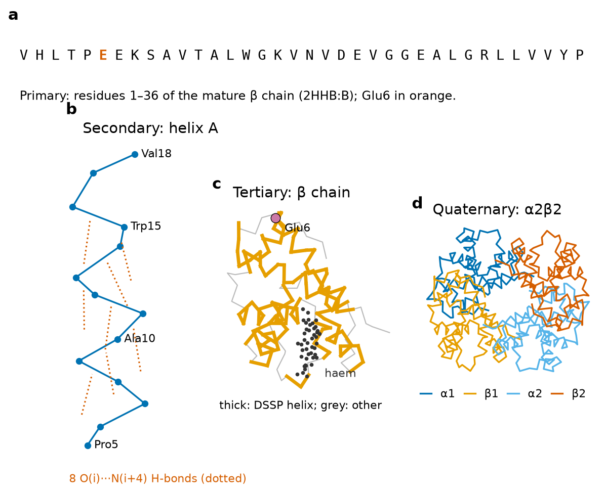
The peptide bond and backbone geometry
Each amino acid contributes three backbone atoms to the chain: the amide nitrogen (N), the α-carbon (Cα), which carries the side chain R, and the carbonyl carbon (C), which carries the carbonyl oxygen (O). Consecutive residues are joined by the peptide bond between C of residue i and N of residue i+1. Because the lone pair of the nitrogen is delocalised over the C=O group, the C–N bond has partial double-bond character. Two consequences follow, and both can be measured directly in 2HHB (Figure 2): the C–N bond is shorter than a normal single C–N bond, and the six atoms Cα(i), C, O, N, H and Cα(i+1) lie in a plane, the peptide plane.
Averaged over the 570 peptide bonds of the four chains of 2HHB, the C–N distance is 1.324 Å (standard deviation 0.020 Å), clearly shorter than the N–Cα single bond (1.468 Å) and the Cα–C single bond (1.531 Å); the C=O distance is 1.236 Å. The distance between consecutive α-carbons is almost constant, 3.80 Å, a value worth memorising because it allows one to estimate the length of an extended chain (about 3.3–3.5 Å per residue in a β-strand, 1.5 Å per residue along the axis of an α-helix). These numbers are partly a property of the protein and partly a property of the refinement: crystallographic programs restrain bond lengths to standard values, which is why the standard deviations are so small.
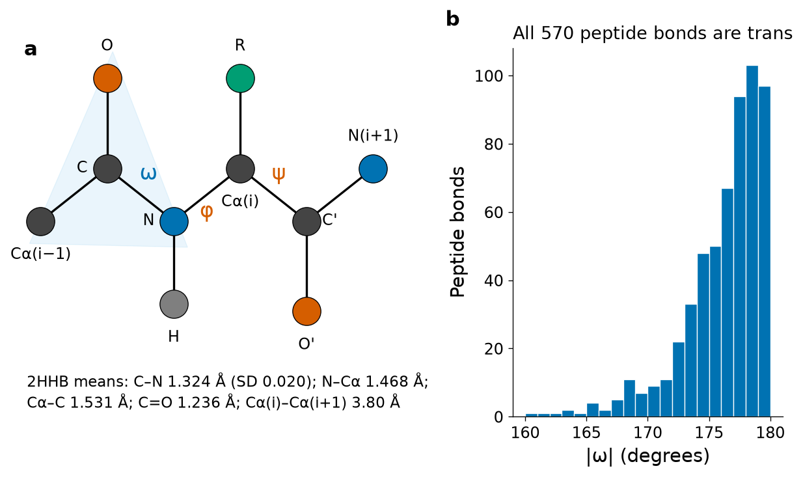
Dihedral angles φ, ψ, ω and the Ramachandran plot
A dihedral (torsion) angle describes rotation about a bond. Given four consecutive atoms A–B–C–D, the dihedral angle is the angle between the plane containing A, B, C and the plane containing B, C, D, viewed along the B–C bond; it ranges from −180° to +180°. Three dihedral angles per residue describe the backbone completely, because bond lengths and bond angles are nearly fixed:
With ω fixed, the conformation of each residue is reduced to two numbers, φ and ψ. In 1963 G. N. Ramachandran, C. Ramakrishnan and V. Sasisekharan computed, using hard-sphere models of atoms, which (φ, ψ) combinations avoid steric clashes between backbone atoms and the Cβ atom[7]. The plot of ψ against φ is now called the Ramachandran plot. Only a few regions are allowed: the right-handed α-helical region around (−63°, −43°), the broad β region in the upper left quadrant (φ ≈ −60° to −150°, ψ ≈ +100° to +180°) that also contains the polyproline II conformation, and a small left-handed helical region (φ > 0) that is accessible mainly to glycine, whose side chain is a single hydrogen atom.
Figure 3 shows the Ramachandran plot computed for this document from 2HHB. Of the 566 residues for which both angles are defined (the first and last residue of each chain lack φ or ψ), 497 fall in the αR region, 57 in the β/PPII region and only 12 have φ > 0; eight of those twelve are glycines. Residues assigned by DSSP as α-helix have mean φ = −65.7° and mean ψ = −38.5° with standard deviations of about 9°, in good agreement with the textbook values. Haemoglobin contains no β-sheet, so the β region is populated only by residues in loops and termini.
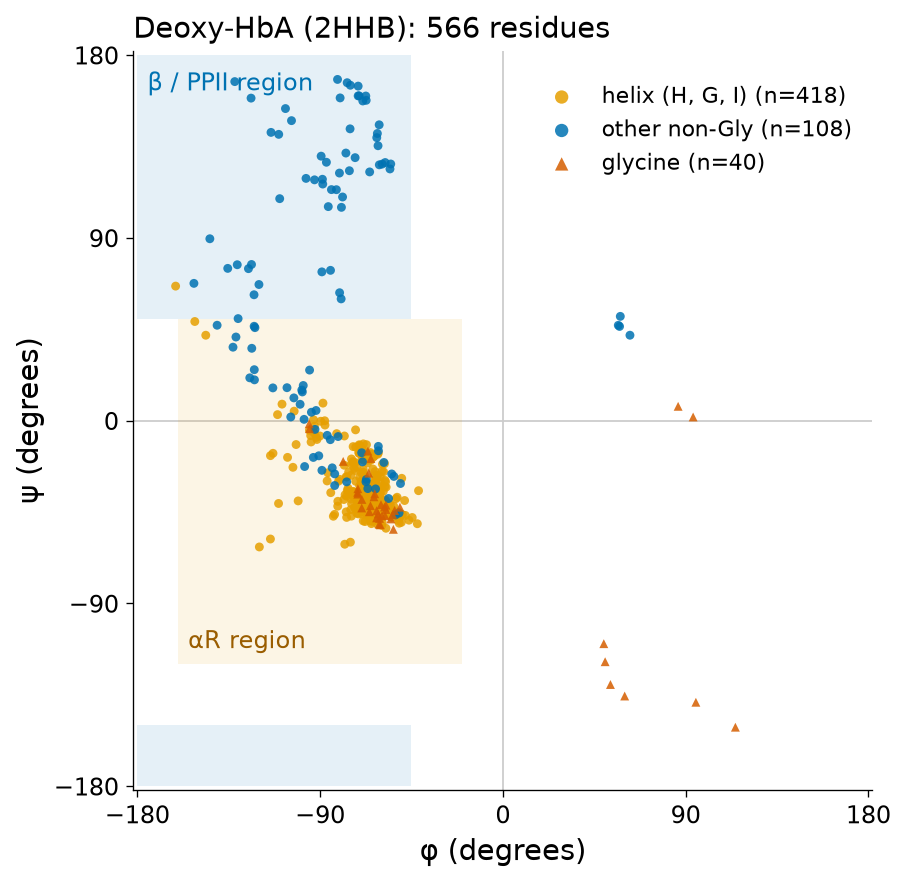
Try it yourself: compute φ and ψ with Biopython
In Colab, first run !pip install biopython. The script of Section 5.1.9 downloads 2HHB.pdb; then:
import math
from Bio.PDB import PDBParser, PPBuilder
s = PDBParser(QUIET=True).get_structure("2HHB", "2HHB.pdb")
pp = PPBuilder().build_peptides(s[0]["B"])[0] # one continuous polypeptide
for res, (phi, psi) in list(zip(pp, pp.get_phi_psi_list()))[:8]:
f = lambda a: " None" if a is None else "%6.1f" % math.degrees(a)
print(res.get_resname(), res.id[1], "phi", f(phi), "psi", f(psi))Residue 1 has no φ because there is no preceding carbonyl carbon. Residues 1–4 are extended (ψ well above 90°), whereas from Pro5 onwards the angles fall in the helical region: this is the start of helix A, the helix that carries Glu6.
Pitfall
φ and ψ are properties of a residue, but they are defined by atoms of the neighbouring residues. A chain break (a missing residue in the model) makes φ and ψ undefined at its edges; programs that blindly use the previous atom in the file will produce absurd values. Biopython's PPBuilder splits the chain at breaks to avoid this error.
Hydrogen bonds and regular secondary structures
A hydrogen bond is an attraction between a hydrogen atom bonded to an electronegative donor (here the backbone N–H) and an electronegative acceptor carrying a lone pair (here the backbone C=O). Typical N···O distances are 2.8–3.2 Å and the interaction energy is a few kcal mol−1. In the α-helix the carbonyl oxygen of residue i accepts a hydrogen bond from the N–H of residue i+4; there are 3.6 residues per turn and a rise of 1.5 Å per residue (5.4 Å per turn). The 310-helix uses i→i+3 bonds and is tighter; the π-helix uses i→i+5 bonds and often appears as a one-turn bulge inside an α-helix. In a β-sheet the hydrogen bonds connect different strands, which may be antiparallel or parallel, and the side chains alternate above and below the sheet.
The DSSP program of Kabsch and Sander identifies these patterns from coordinates by computing an electrostatic hydrogen-bond energy between every C=O and N–H pair and calling a bond when the energy is below −0.5 kcal mol−1[8]. Running DSSP (mkdssp 4.6.1) on 2HHB found 457 backbone hydrogen bonds; 339 of them are of the i→i+4 (α-helical) type and 92 of the i→i+3 type, which occur at helix ends and in turns. Section 5.2.1 explains how DSSP converts these bonds into secondary-structure letters.
Formal detail: the DSSP hydrogen-bond energy
DSSP places partial charges q1 = 0.42e on C and −0.42e on O, and q2 = 0.20e on H and −0.20e on N, and computes the electrostatic energy
The hydrogen position is not usually present in X-ray models; DSSP places it 1.0 Å from N in the direction opposite to the C=O bond of the preceding residue, which is a good approximation because the peptide group is planar.
Tertiary structure, domains and the forces that hold a fold together
The tertiary structure arises from the packing of secondary-structure elements. In water, hydrophobic side chains are buried in a core and polar or charged side chains are mostly exposed; this hydrophobic effect, which is largely entropic in origin (water molecules lose freedom around non-polar surfaces), is the main driving force of folding. Hydrogen bonds, salt bridges between opposite charges, van der Waals contacts and, in extracellular proteins, disulfide bonds between cysteines add specificity and stability. The net stability of a folded protein is surprisingly small, typically 5–15 kcal mol−1, the difference between very large favourable and unfavourable terms.
A domain is a compact unit of tertiary structure that can often fold independently and recurs in different proteins; structural classifications such as CATH and SCOP (Section 5.1.12) are built at the domain level. Each globin chain is a single domain with the globin fold: eight helices, named A to H, wrapped around the haem pocket. By convention, haemoglobin residues are also named by helix position: the proximal histidine that binds the haem iron is His F8 (the eighth residue of helix F, which is His87 in α and His92 in β), and the sickle-cell residue β6 lies in helix A (A3). The distance between the NE2 atom of β His92 and the haem iron in 2HHB is 2.15 Å, recorded as a covalent LINK in the file (Section 5.1.6).
Two further computations describe a fold quantitatively and will be reused later. A contact map is a symmetric matrix whose element (i, j) indicates whether residues i and j are close in space, for example whether their Cα atoms are within 8 Å. Helices appear as thick bands along the diagonal and contacts between helices as off-diagonal patches; the β chain of 2HHB has 387 Cα–Cα contacts below 8 Å between residues separated by three or more positions, 131 of them long-range (|i − j| ≥ 12) (Figure 5 in Section 5.1.9). Contact maps are important because modern prediction methods first predict contacts or distances and then build coordinates that satisfy them (Section 5.3.7). The solvent-accessible surface area (SASA) is the area traced by the centre of a water-sized probe (radius 1.4 Å) rolled over the van der Waals surface[9]; dividing the SASA of a residue by its maximum value in an extended tripeptide[10] gives the relative accessibility, which separates buried from exposed residues.
Key ideas
- Primary, secondary, tertiary and quaternary structure are levels of description of the same object; disease mutations can act at any level.
- The peptide bond is planar (ω ≈ 180°), so each residue has two free backbone angles, φ and ψ; the Ramachandran plot shows which combinations are sterically allowed.
- α-helices (i→i+4 hydrogen bonds) and β-sheets (inter-strand hydrogen bonds) are the regular secondary structures; DSSP assigns them from an electrostatic hydrogen-bond energy.
- Contact maps and solvent accessibility summarise a fold numerically and will be used for comparison and prediction.
Section 5.1Determination of three-dimensional structures, PDB files, the Protein Data Bank, visualisation programs and other structural databases
Curriculum: «Determinación de estructuras tridimensionales. Ficheros PDB. El Protein Data Bank. Programas para la visualización de estructuras 3D. Otras bases de datos estructurales.» — Determination of three-dimensional structures. PDB files. The Protein Data Bank. Programs for the visualisation of 3D structures. Other structural databases.
No microscope shows atoms directly in the way a camera shows a cell. Every atomic structure in the Protein Data Bank is a model: a set of coordinates that a scientist built and refined so that it agrees, within error, with experimental data and with known stereochemistry. Understanding which data were used, and how well the model fits them, is the first skill of structural bioinformatics, because downstream analyses (docking, homology modelling, design) inherit every error of the starting model. Three methods account for almost all experimental entries. According to the RCSB Search API queried on 18 October 2026, the archive contained 260,896 experimentally determined entries: 208,047 from X-ray crystallography (79.7 %), 37,594 from electron microscopy (14.4 %), 14,861 from NMR spectroscopy (5.7 %), 267 from combinations of methods, 90 from neutron diffraction and 37 from other techniques.
5.1.1 X-ray crystallography
Principle. Visible light cannot resolve atoms because its wavelength (400–700 nm) is thousands of times larger than interatomic distances (about 0.1–0.2 nm). X-rays with wavelengths near 1 Å (0.1 nm) can, but there are no lenses for X-rays. Crystallography solves this problem in two steps: the sample scatters (diffracts) X-rays, and a computer performs the role of the lens by Fourier synthesis.
Crystals. A single molecule scatters far too weakly to be measured, so the protein must first be crystallised: highly purified protein is brought slowly to supersaturation (for example by vapour diffusion against a precipitant such as polyethylene glycol or ammonium sulfate), and under favourable conditions it forms an ordered three-dimensional lattice in which some 1012–1015 copies have the same orientation. The repeating unit of the lattice is the unit cell, described by three lengths (a, b, c) and three angles (α, β, γ); the smallest part from which the whole cell can be generated by the crystal's symmetry operations is the asymmetric unit, and it is the asymmetric unit that is deposited. The CRYST1 record of 2HHB, for example, states a = 63.15 Å, b = 83.59 Å, c = 53.80 Å, β = 99.34° and space group P 1 21 1. Protein crystals contain 30–70 % solvent, which is one reason why crystal structures generally resemble the solution structure. Crystallisation is often the bottleneck of the method; membrane proteins and flexible complexes are notoriously difficult.
Diffraction. When a monochromatic X-ray beam (from a synchrotron or a laboratory source) hits the crystal, the waves scattered by the electrons of all unit cells interfere. Constructive interference occurs only in particular directions, given by Bragg's law, producing a pattern of spots (reflections) on the detector. Rotating the crystal brings successive families of lattice planes into the diffracting condition, and a complete data set may contain tens or hundreds of thousands of reflections, each with an index (h, k, l) and a measured intensity I(hkl).
The phase problem. Each reflection is a wave with an amplitude |F(hkl)| and a phase α(hkl). The electron density at every point (x, y, z) of the unit cell is the Fourier sum of all these waves. The detector measures intensities, and I ∝ |F|², so amplitudes are obtained but phases are lost. This is the phase problem, the central difficulty of crystallography. It is solved by molecular replacement (using a similar known structure, or nowadays very often an AlphaFold model, to calculate initial phases), by experimental phasing (heavy-atom derivatives, as Perutz did for haemoglobin, or anomalous scattering from selenium or metals), or, for very small molecules, by direct methods.
Model building and refinement. Once an electron-density map is available, the crystallographer fits the known sequence into it, then iteratively adjusts coordinates to improve agreement between the observed amplitudes |Fobs| and those calculated from the model |Fcalc|, while restraining bond lengths and angles to standard values. Each atom is assigned three coordinates, an occupancy (the fraction of unit cells in which the atom is at that position; values below 1 indicate alternative conformations) and a B-factor (atomic displacement parameter).
Resolution. The resolution of a data set is the smallest lattice spacing d for which reflections were measured with useful signal. At 3.5 Å the chain can be traced and helices recognised but side chains are ambiguous; at 2.5 Å most side chains are well defined; at 1.5 Å individual atoms begin to separate; below 1.2 Å ("atomic resolution") hydrogen atoms may be seen. 2HHB is a 1.74 Å structure; the oxymyoglobin structure 1A6M used in Section 5.3 extends to 1.0 Å.
R and Rfree. Agreement between model and data is summarised by the crystallographic R-factor. Because a model with enough adjustable parameters can be made to fit any data, Brünger introduced in 1992 the free R-factor, computed on a test set of reflections (typically 5 %) that are excluded from refinement[11]. Rfree behaves like a cross-validation error in machine learning: it detects over-fitting. 2HHB (deposited in 1984, before Rfree existed) reports only R = 0.160; the sickle-cell structure 2HBS reports R = 0.165 and Rfree = 0.215 at 2.05 Å, and the deoxy-HbA structure 1A3N reports 0.171 and 0.220 at 1.80 Å. As a rule of thumb, Rfree should be close to one tenth of the resolution in Å, and the gap Rfree − R should not exceed about 0.05–0.07.
B-factors. The B-factor of an atom measures the spread of its electron density, combining thermal vibration, static disorder between unit cells and model error. It is related to the mean-square displacement ⟨u²⟩ by B = 8π²⟨u²⟩, so B = 20 Ų corresponds to a root-mean-square displacement of about 0.5 Å. B-factors are lowest in the core and highest at termini and in exposed loops. In 2HHB the Cα B-factor of the β chain ranges from 7.5 Ų to 55.3 Ų with a mean of 20.8 Ų, and the three highest values occur at residues 1–3, the flexible N-terminus (Figure 5b).
Clinical connection
Haemoglobin crystallography had direct consequences for medicine. Perutz's 5.5 Å map of horse haemoglobin[3] and later atomic models explained cooperative oxygen binding by a switch between a tense (T, deoxy) and a relaxed (R, oxy) quaternary state, and allowed hundreds of clinically described haemoglobin variants to be interpreted by their position in the structure. A 5 Å map of deoxy-HbS crystals showed in 1975 that the β6 valine of one tetramer contacts a neighbouring tetramer[12]; the 2.05 Å structure 2HBS refined this picture[13] (Section 5.3.10 and the running case).
5.1.2 Nuclear magnetic resonance (NMR) spectroscopy
Principle. Nuclei with spin, such as 1H, 13C and 15N, behave as small magnets. In a strong magnetic field (modern spectrometers operate at 14–28 tesla, corresponding to 600–1200 MHz for protons) they absorb radio-frequency radiation at frequencies that depend slightly on their chemical environment: the chemical shift. Proteins are studied in solution (usually 0.1–1 mM, isotopically labelled with 13C and 15N by expression in bacteria grown on labelled nutrients), so no crystal is needed and dynamics can be observed directly.
Assignment and restraints. Multidimensional experiments first assign each signal to a specific atom. Structural information then comes from restraints: the nuclear Overhauser effect (NOE) between two protons decays approximately with the sixth power of their distance and is detectable only below about 5–6 Å, so each NOE gives an upper bound on an interproton distance; scalar couplings and chemical shifts constrain dihedral angles; residual dipolar couplings provide orientational information. Wüthrich, who developed the method for proteins, summarised its principles in his Nobel lecture[14].
Ensembles. Coordinates are computed by simulated annealing or distance geometry so as to satisfy thousands of restraints simultaneously. Because restraints are bounds rather than exact values, many structures satisfy them equally well, and NMR entries contain an ensemble of models (commonly 10–20, each starting with a MODEL record in the PDB file). Regions where the models diverge are either poorly restrained or genuinely flexible; the two cannot always be distinguished. NMR entries therefore have no single resolution; precision is reported as the RMSD of the ensemble around its mean, and accuracy is judged by restraint violations and stereochemistry. NMR is practical mainly for proteins below about 30–40 kDa, which is why its share of new entries has fallen while the total output has stayed modest (between 196 and 449 NMR entries per year during 2015–2026, Figure 4). Chemical shifts and restraints are archived in the Biological Magnetic Resonance Data Bank (BMRB)[15].
5.1.3 Cryo-electron microscopy (cryo-EM)
Principle. Electrons have wavelengths far shorter than an ångström and are focused by magnetic lenses, so an electron microscope forms real images. Biological samples are damaged by the beam and contain mostly light atoms, so they must be imaged with very low electron doses, producing extremely noisy images. In single-particle cryo-EM a thin film of the purified sample is plunge-frozen in liquid ethane so quickly that water forms vitreous (non-crystalline) ice that preserves the native structure. Hundreds of thousands to millions of individual particle images, each a two-dimensional projection of a molecule in a random orientation, are then recorded.
Reconstruction. Software aligns and classifies the particle images, estimates the orientation of each, and combines them into a three-dimensional Coulomb-potential map by back-projection (the projection-slice theorem relates each 2D projection to a central slice of the 3D Fourier transform). Classification can separate different conformations present in the same sample, an advantage over crystallography. The resolution of a map is estimated by the Fourier shell correlation (FSC) between two independently refined half-maps, conventionally at the 0.143 threshold. An atomic model is then built into the map much as in crystallography. Maps are deposited in the Electron Microscopy Data Bank (EMDB)[16], models in the PDB.
The resolution revolution. Until about 2012, single-particle maps rarely reached better than 8–10 Å ("blobology"). Direct electron detectors, which count individual electrons fast enough to correct beam-induced motion, and new statistical image processing changed this abruptly; Kühlbrandt called the change the "resolution revolution"[17]. The archive statistics retrieved for this document show the effect directly (Figure 4): the fraction of EM entries with resolution better than 3.0 Å rose from 0.5 % of the 192 EM entries released in 2014 to 40.9 % of the 6,285 released in 2026 (to 18 October). In 2025 the PDB released 7,233 EM entries and 10,064 X-ray entries; EM has become the method of choice for large complexes, membrane proteins and flexible assemblies.
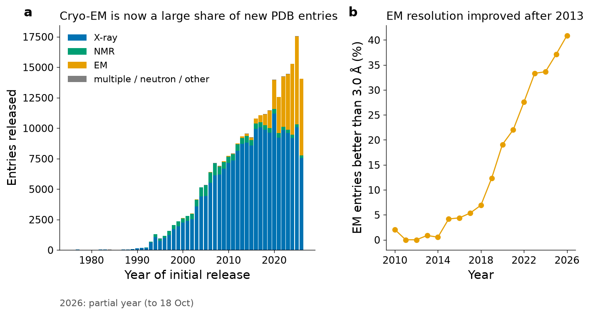
rcsb_accession_info.initial_release_date × rcsb_entry_info.experimental_method), stacked by method; the 2026 bar covers only part of the year. (b) Percentage of EM entries per release year whose reported resolution is better than 3.0 Å (histogram facet on rcsb_entry_info.resolution_combined in 0.5 Å bins). The steep rise after 2014 is the "resolution revolution" of cryo-EM.5.1.4 Integrative and other methods
Some systems are too large, too heterogeneous or too dynamic for any single method. Integrative (hybrid) modelling combines data from several sources, such as cryo-EM maps of a whole assembly, crystal structures of its parts, chemical cross-linking with mass spectrometry, small-angle X-ray scattering (SAXS), Förster resonance energy transfer and computational models, into a single model or ensemble. The nuclear pore complex is a famous example. Because such models do not fit the classical archive, the wwPDB built a prototype deposition system for them, PDB-Dev[18]. Other experimental methods contribute smaller numbers of entries: neutron diffraction (90 entries in October 2026) locates hydrogen atoms, which is valuable for enzyme mechanisms; micro-electron diffraction (microED) obtains atomic data from nanocrystals; solid-state NMR studies fibrils and membrane proteins; and X-ray free-electron lasers allow time-resolved crystallography on femtosecond time scales.
5.1.5 Validation: how to judge the reliability of a model
Every deposited structure is accompanied by a wwPDB validation report, generated according to the recommendations of expert task forces[19]. It compares the entry with all others determined by the same method at similar resolution and presents percentile "sliders". The main metrics are:
- Global fit to data: Rfree for X-ray; map–model correlation and Q-scores for cryo-EM; restraint violations for NMR.
- Geometry: outliers in bond lengths and angles, Ramachandran outliers (residues in disallowed φ/ψ regions; a good structure has fewer than 0.5 %), side-chain rotamer outliers, and the clashscore (number of serious steric overlaps per 1000 atoms), all computed with MolProbity-type algorithms[20].
- Local fit: the real-space R value (RSR) and its Z-score for each residue, which flag regions poorly supported by density, frequently ligands.
Pitfall
"Resolution" is not a quality score of the model; it describes the data. A 2.0 Å structure with a ligand modelled into weak or absent density is less reliable, for that ligand, than a 2.8 Å structure with clear density. Before using any ligand pose for docking (Section 5.4), open the validation report and inspect the electron density of the ligand. Likewise, residues with very high B-factors or zero occupancy are guesses.
Key ideas
- X-ray crystallography measures diffraction intensities from crystals; phases must be recovered (molecular replacement or experimental phasing); quality is judged by resolution, R and Rfree, and B-factors.
- NMR yields distance and angle restraints in solution and deposits ensembles; it reveals dynamics but is limited to smaller proteins.
- Cryo-EM reconstructs maps from images of frozen single particles; since about 2014 it routinely reaches near-atomic resolution and now contributes about a third or more of new entries.
- Every model must be judged with the validation report, globally and locally.
5.1.6 PDB files: the legacy fixed-column format, dissected
The original PDB format was designed in the 1970s for 80-column punched cards, and every line ("record") is exactly 80 characters long. The first six characters name the record type; the meaning of every other character is defined by its column position, not by separators. This is why the format is easy to read by eye but treacherous to parse with simple "split on spaces" code: when a coordinate is negative and large, the minus sign fills the space that would have separated two numbers. The following excerpt is taken verbatim from the header of 2HHB.pdb, downloaded from files.rcsb.org for this document (only selected records are shown):
Reading the header record by record:
- HEADER: classification (OXYGEN TRANSPORT), deposition date (07-MAR-84) and the four-character identifier. TITLE is the title of the entry; continuation lines carry a number in columns 9–10.
- COMPND and SOURCE: the macromolecules (MOL_ID 1 is the α chain, chains A and C; MOL_ID 2 is the β chain, chains B and D) and their biological origin.
- EXPDTA: experimental method. REMARK 2 gives the resolution; REMARK 3 contains the refinement statistics, including R and, for modern entries, Rfree (the 1984 entry has none).
- REMARK 465 lists residues that are present in the sample sequence but were not located in the experiment. 2HHB has no such residues, but the deoxy-HbA entry 1A3N does: the N-terminal Val1 of both β chains was not modelled.
- DBREF links each chain to a sequence database entry (here UniProt; in this old entry the obsolete accession P02023 is used, now merged into P68871, the current accession of human β-globin, with the initiator methionine counted as residue 1 in UniProt but removed in the mature protein).
- SEQRES gives the full sequence of each chain as three-letter codes, 13 per line, including residues that may be missing from the coordinates. Comparing SEQRES with the residues that actually have ATOM records is how missing segments are detected.
- HET, HETNAM and FORMUL describe non-polymer groups ("heterogens"): HEM (protoporphyrin IX containing Fe, 43 atoms per copy, four copies), phosphate ions (PO4) and 221 water molecules. Each chemical component has an identifier in the wwPDB Chemical Component Dictionary.
- HELIX (and SHEET) give the secondary structure declared by the depositors; Section 5.2.1 compares such annotations with DSSP.
- LINK declares covalent or coordinate bonds not implied by standard residues: here the 2.15 Å bond between NE2 of His B92 and the haem iron.
- CRYST1 gives the unit cell (a, b, c in Å; α, β, γ in degrees) and the space group; for NMR and EM entries it is a dummy record.
The coordinate section follows. The excerpt below shows the nine atoms of β Glu6, the TER record that closes chain B, one HETATM record of the haem, one water and a CONECT record; the two ruler lines at the top are added to help counting columns:
| Columns | Field | Value in the example | Comment |
|---|---|---|---|
| 1–6 | record name | ATOM | HETATM for non-standard groups, ligands and water |
| 7–11 | atom serial number | 1111 | maximum 99,999 |
| 13–16 | atom name | CA | alignment encodes the element: one-letter elements start in column 14, so CA (α-carbon) is never confused with Ca (calcium), which starts in column 13 |
| 17 | alternate location indicator | (blank) | A, B… when a residue has alternative conformations |
| 18–20 | residue name | GLU | three-character code |
| 22 | chain identifier | B | a single character |
| 23–26 | residue sequence number | 6 | author numbering; may skip or start at any value |
| 27 | insertion code | (blank) | used to keep numbering consistent with a reference protein (common in antibodies) |
| 31–38, 39–46, 47–54 | x, y, z | 27.149, −10.600, 33.493 | orthogonal coordinates in Å, format 8.3 |
| 55–60 | occupancy | 1.00 | fraction of molecules with the atom at this position |
| 61–66 | B-factor | 39.29 | Ų; in AlphaFold files this column holds pLDDT instead |
| 77–78 | element symbol | C | right-justified |
| 79–80 | charge | (blank) | formal charge, e.g. 2+ |
TER marks the end of a polymer chain. CONECT records list bonds by atom serial number for heterogens and for LINK bonds: CONECT 1771 4475 connects atom 1771 (NE2 of His B92) to atom 4475 (the iron of HEM B148). Multi-model entries (NMR ensembles) enclose each model between MODEL and ENDMDL; MASTER holds record counts used for consistency checks and END closes the file.
Pitfall
Never parse PDB files with line.split(). In the record ATOM 1118 OE2 GLU B 6 24.044 -12.004 31.078 the fields happen to be separated, but large negative coordinates such as -100.123 fill the whole 8-column field and fuse with the previous number. Use column slicing (line[30:38] for x) or, better, a tested parser such as Biopython's.
5.1.7 The PDBx/mmCIF format and why the legacy format was frozen
The fixed columns impose hard limits: at most 99,999 atoms (five-digit serial), one-character chain identifiers (at most 62 chains), four-digit residue numbers, three-character residue and ligand codes and four-character entry identifiers. Large ribosomes, viruses and cryo-EM assemblies exceed these limits. The PDBx/mmCIF format (Macromolecular Crystallographic Information File, extended by the PDB) has no such limits: it is a self-describing key–value and table format governed by a machine-readable dictionary that defines every data item, its type and its relationships[21]. The PDBx/mmCIF dictionary became the master format of the archive in 2007, and the wwPDB stopped developing the legacy format in 2012; since 1 July 2019 PDBx/mmCIF has been the only format accepted for crystallographic depositions[22]. Entries with 100,000 or more atoms or with multi-character chain identifiers have no legacy PDB file at all, and because the three-character Chemical Component identifiers have been exhausted, entries containing new ligands with five-character codes are distributed only in PDBx/mmCIF. Four-character PDB identifiers are themselves expected to run out: the wwPDB has introduced extended identifiers of the form pdb_00002hhb, already present in every mmCIF file, and the RCSB documentation states that after 21 July 2027 new entries will receive only extended identifiers and will be distributed only in PDBx/mmCIF.
In mmCIF every data item has a name of the form _category.attribute. Single values are written as key–value pairs; tables are introduced by loop_, followed by the column names and then the rows, separated by white space (a question mark means "unknown", a full stop "not applicable"). The excerpt below, from 2HHB.cif, shows the _database_2 category with the extended identifier and the entry DOI, and the beginning of the _atom_site table, which replaces ATOM/HETATM records:
Note that each atom carries two numbering schemes. The label_* items (label_asym_id, label_seq_id) are assigned by the archive and are always consistent with the entity sequence (_entity_poly_seq), whereas the auth_* items reproduce the numbering chosen by the authors, which is what the legacy file shows and what publications use. Confusing the two is a classic source of off-by-n errors when mapping UniProt positions or mutations onto structures.
Try it yourself: read an mmCIF file as a dictionary
import urllib.request
from Bio.PDB.MMCIF2Dict import MMCIF2Dict
urllib.request.urlretrieve("https://files.rcsb.org/download/2HBS.cif", "2HBS.cif")
d = MMCIF2Dict("2HBS.cif")
print("method :", d["_exptl.method"])
print("resolution (A):", d["_refine.ls_d_res_high"])
print("R-work, R-free:", d["_refine.ls_R_factor_R_work"], d["_refine.ls_R_factor_R_free"])
print("extended ID :", d["_database_2.pdbx_database_accession"])
print("DOI :", d["_database_2.pdbx_DOI"])
print("first atom_site record:", [d[k][0] for k in ("_atom_site.group_PDB","_atom_site.label_atom_id",
"_atom_site.label_comp_id","_atom_site.auth_asym_id","_atom_site.auth_seq_id","_atom_site.Cartn_x")])Every value is returned as a list of strings, because any item may be a table column. Biopython's MMCIFParser builds the same Structure object as PDBParser, so all the code in this unit works with either format.
5.1.8 The Protein Data Bank: history, the wwPDB partners and archive statistics
The Protein Data Bank was founded in 1971 at Brookhaven National Laboratory as the first open-access digital archive in biology, holding seven structures[23]. Since 2003 it has been managed by the Worldwide Protein Data Bank (wwPDB), an organisation that ensures a single, uniform, freely available global archive[24][25]. Depositions from anywhere in the world pass through the common OneDep system and are biocurated by one of the partners, and all partners distribute the same data. The partners are:
- RCSB PDB (Research Collaboratory for Structural Bioinformatics, USA; rcsb.org): the US data centre, with the Mol* viewer, the Search and Data APIs used in this unit, and the PDB-101 educational portal[26].
- PDBe (Protein Data Bank in Europe, EMBL-EBI, United Kingdom; ebi.ac.uk/pdbe): the European data centre, which also hosts EMDB and provides the PDBe-KB knowledge base and the SIFTS mapping between PDB and UniProt residues.
- PDBj (Protein Data Bank Japan, Osaka University; pdbj.org): the Asian data centre.
- BMRB (Biological Magnetic Resonance Data Bank): the archive of NMR data[15].
- EMDB (Electron Microscopy Data Bank): the archive of cryo-EM maps, managed jointly within the wwPDB[16].
Every entry has a permanent DOI of the form 10.2210/pdb2hhb/pdb, and every structure published in a peer-reviewed journal must be deposited and released. Entries are versioned: when an entry is remediated its revision history is recorded, and an entry may be obsoleted and superseded by a better one; the SPRSDE record of 2HHB, for example, states that it supersedes the earlier entry 1HHB. Since 2022 the RCSB website also displays computed structure models (CSMs) from AlphaFold DB and ModelArchive alongside experimental entries, clearly labelled; the counts in this unit refer to experimental entries only.
Try it yourself: archive statistics through the RCSB Search API
The Search API accepts a JSON query and can return facets, that is, counts of the matching entries grouped by an attribute. The query below counts all experimental entries grouped by method; Figure 4 was produced by the same API with a nested facet on release year.
import requests
query = {"query": {"type": "terminal", "service": "text",
"parameters": {"attribute": "rcsb_entry_info.structure_determination_methodology",
"operator": "exact_match", "value": "experimental"}},
"return_type": "entry",
"request_options": {"paginate": {"start": 0, "rows": 0},
"facets": [{"name": "m", "aggregation_type": "terms",
"attribute": "rcsb_entry_info.experimental_method"}]}}
r = requests.post("https://search.rcsb.org/rcsbsearch/v2/query", json=query).json()
print("experimental entries:", r["total_count"])
for b in r["facets"][0]["buckets"]:
print(f'{b["label"]:>18}: {b["population"]:7d}')Output retrieved on 18 October 2026; the numbers grow every Wednesday, when the PDB releases new entries. On the website the same information is available under "Advanced Search" and "PDB Statistics".
5.1.9 Computing with structures: Biopython's Bio.PDB
Biopython[27] represents a structure as a hierarchy known as SMCRA: a Structure contains Models (several for NMR ensembles), each model contains Chains, each chain contains Residues, and each residue contains Atoms[28]. Residues are identified by a tuple (hetero flag, sequence number, insertion code): standard residues have a blank flag, waters the flag "W" and ligands "H_" followed by the residue name. Subtracting two Atom objects returns their distance in Å. The program below loads 2HHB and reproduces several facts used in this unit.
Try it yourself: parse 2HHB and measure a distance
import urllib.request
from Bio.PDB import PDBParser
urllib.request.urlretrieve("https://files.rcsb.org/download/2HHB.pdb", "2HHB.pdb")
structure = PDBParser(QUIET=True).get_structure("2HHB", "2HHB.pdb")
model = structure[0]
for chain in model:
aa = [r for r in chain if r.id[0] == " "] # standard residues (ATOM)
het = [r for r in chain if r.id[0].startswith("H_")] # ligands (HETATM)
wat = [r for r in chain if r.id[0] == "W"] # waters
print(f"chain {chain.id}: {len(aa)} residues, ligands {[h.get_resname() for h in het]}, {len(wat)} waters")
his = model["B"][92] # proximal histidine of the beta chain
fe = model["B"][("H_HEM", 148, " ")]["FE"]
print("beta His92 NE2 - Fe distance: %.2f A" % (his["NE2"] - fe))
print("B-factor of beta Val1 CA: %.1f A^2" % model["B"][1]["CA"].get_bfactor())The 221 waters of the FORMUL record are distributed as 58 + 58 + 58 + 47 among the four chains. The Fe–NE2 distance agrees with the LINK record.
With the same objects one can compute composition (2HHB has 4,779 atoms in total, of which 4,384 are ATOM records), backbone geometry (Foundations), contacts and accessibility. Figure 5 shows two such computations for the β chain: the Cα contact map and the B-factor profile. In the contact map each helix appears as a thick band along the diagonal (residues i and i+1…i+4 are always close in a helix), and off-diagonal patches reveal helix–helix packing; the patch formed by residues 23–27 against residues 106–113, for example, is the contact between helices B and G (11 Cα pairs below 8 Å, closest 5.5 Å), a hallmark of the globin fold. Contact maps are invariant to rotation and translation, which makes them convenient for comparing structures and for prediction.
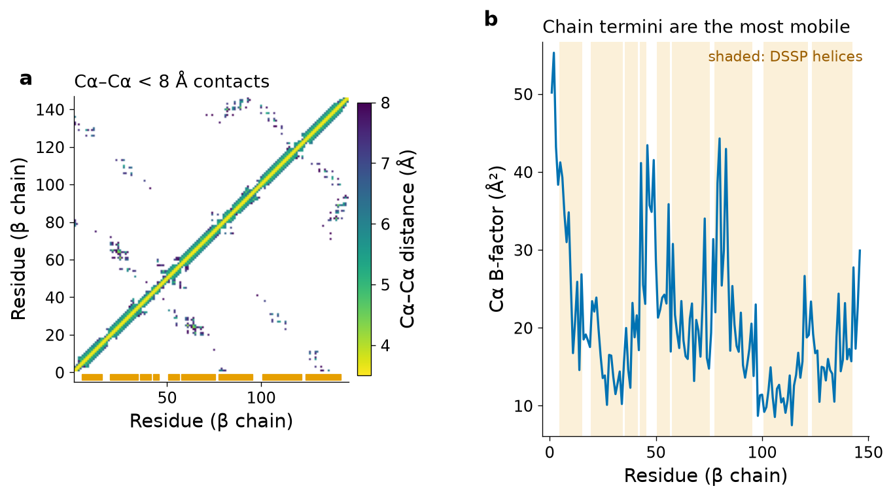
Bridge
Unit 3 retrieved the UniProt record P68871 and its sequence features. Structure-to-sequence mapping uses the SIFTS resource (PDBe), which links each residue of each PDB chain to the corresponding UniProt position. In the lecture document 02 Protein Structure Prediction, Section 4 discusses the PDB from the perspective of model building.
5.1.10 Programs for the visualisation of 3D structures
Coordinates are lists of numbers; understanding requires seeing them. A molecular viewer reads a structure file, assigns atoms to residues and chains, infers bonds, and renders the molecule in one or more representations, which can be rotated and combined:
- Lines, sticks and ball-and-stick show every bond; they are used for active sites, ligands and mutations.
- Spheres (space-filling, CPK) draw atoms at their van der Waals radii and show shape and packing.
- Cartoon (ribbon) traces the backbone as a smooth curve, drawing helices as spirals or cylinders and strands as arrows pointing to the C-terminus; side chains are hidden. It is the standard representation of folds.
- Molecular surface (solvent-excluded surface) shows the boundary that a probe sphere cannot penetrate; colouring the surface by electrostatic potential or hydrophobicity reveals binding sites.
The main programs are:
- PyMOL (Schrödinger; an open-source version is also available): a desktop program widely used for publication figures, controlled by a command line and Python scripting.
- UCSF ChimeraX[29]: the successor of UCSF Chimera, free for academic use, with strong support for cryo-EM maps, very large assemblies, virtual reality and direct fetching of AlphaFold models; it is the program recommended for this course.
- VMD (Visual Molecular Dynamics)[30]: designed for the analysis of molecular-dynamics trajectories, used in the companion document 05.
- Jmol/JSmol: an open-source Java (Jmol) and JavaScript (JSmol) viewer, historically embedded in many educational web pages.
- Mol* (Molstar)[31]: the WebGL viewer jointly developed by PDBe and RCSB PDB and embedded on both websites; it handles structures of millions of atoms in a browser, shows validation data and electron-density or EM maps, and needs no installation.
- 3Dmol.js[32]: a lightweight JavaScript library for embedding interactive viewers in web pages, used for the viewer below.
5.1.11 Mini-tutorial: ChimeraX and PyMOL step by step
The following command sequences carry out the same visual analysis of deoxyhaemoglobin. Type each line in the ChimeraX command line (bottom of the window) or in the PyMOL prompt. A hash sign (#) begins a comment in PyMOL scripts; in ChimeraX, comments are shown here only for explanation and should not be typed.
UCSF ChimeraX
open 2hhb # fetch deoxy-HbA from the PDB (becomes model #1)
cartoon; hide atoms # backbone only
color bychain # one colour per chain
show :HEM atoms; style :HEM stick # the four haem groups
show /B:6,92 atoms # beta Glu6 (site of the sickle mutation) and proximal His92
label /B:6,92 # residue labels
distance /B:92@NE2 /B:148@FE # Fe-His bond: should read about 2.15 A
surface /B; transparency /B 60 # molecular surface of the beta1 chain
open 2hbs # deoxy-HbS (model #2)
matchmaker #2 to #1 # superpose HbS onto HbA (sequence alignment + least squares)
show #2/B:6 atoms # Val6 in HbS occupies the same surface position as Glu6
alphafold fetch P68871 # AlphaFold DB model of human beta-globin (model #3)
color bfactor #3 palette alphafold # colour the model by pLDDT
matchmaker #3 to #1/B
save hb_view.png supersample 3 # high-quality imagePyMOL
fetch 2hhb
hide everything
show cartoon
util.cbc # colour by chain
show sticks, resn HEM
show sticks, chain B and resi 6+92
label chain B and resi 6+92 and name CA, "%s%s" % (resn, resi)
distance fe_his, chain B and resi 92 and name NE2, chain B and resn HEM and name FE
show surface, chain B
set transparency, 0.6
fetch 2hbs
align 2hbs and chain B, 2hhb and chain B # prints the RMSD after superposition
ray 1600, 1200
png hb_view.pngThe interactive viewer below loads 2HHB directly from the RCSB (an internet connection is required). Use the buttons to switch representations; drag to rotate, scroll to zoom. If the viewer does not load, Figure 1d shows a static view of the same tetramer.
Try it yourself: Mol* on the RCSB website
- Open
https://www.rcsb.org/structure/2HHBand click "3D View". Mol* opens with the assembly in cartoon representation. - In the sequence panel at the top, select chain B and click residue Glu6; the residue is highlighted and its neighbours within 5 Å are shown as sticks.
- Open the "Validation report" link on the structure summary page and locate the Ramachandran-outlier and clashscore sliders discussed in Section 5.1.5.
- Repeat with
2HBSand compare residue 6 of chain B. Which chain of the second tetramer is close to Val6 of chain H? (Answer in the running case.)
Pitfall
A viewer draws what is in the file, not what is in the cell. The asymmetric unit of a crystal may contain half of a biological assembly (then the other half must be generated by symmetry) or two copies of it (2HBS contains two HbS tetramers). Use the "biological assembly" files (2HHB-assembly1.cif) when the question is about the functional oligomer, and the asymmetric unit when the question is about crystal contacts, as in sickle-cell polymerisation.
5.1.12 Other structural databases
Around the PDB has grown an ecosystem of derived databases that classify, annotate, predict or link structures. The most important for a biomedical engineer are summarised below; all are free.
| Resource | What it contains | Typical use |
|---|---|---|
| CATH[33] | Hierarchical classification of protein domains: Class (mainly α, mainly β, α/β, few secondary structures), Architecture, Topology (fold) and Homologous superfamily | Assigning a domain to a fold and superfamily; the globins are in CATH class 1 (mainly α) |
| SCOP / SCOP2[34] | Manually curated classification of domains into families, superfamilies, folds and classes, reorganised in SCOP2 as a network that allows several relationships | Evolutionary relationships between distant proteins |
| ECOD[35] | Evolutionary Classification of Domains, emphasising distant homology (X-, H-, T- and F-groups) | Detecting remote evolutionary relationships |
| AlphaFold DB[36][37] | Predicted structures, from AlphaFold, for essentially all UniProt sequences, with pLDDT and PAE confidence data | Structural models for proteins without experimental structures (Section 5.3.9) |
| ModelArchive | Repository for theoretical models not produced by AlphaFold DB, with a DOI per model | Depositing models produced in a publication |
| PDBsum[38] | Pictorial summaries of every PDB entry: secondary-structure diagrams, protein–ligand interaction diagrams, PROCHECK Ramachandran plots | Quick overview of an entry and its interactions |
| BioLiP[39] | Semi-manually curated, biologically relevant ligand–protein interactions extracted from the PDB (crystallisation additives removed) | Binding-site datasets |
| PDBbind[40] | Experimentally measured binding affinities (Kd, Ki, IC50) for complexes of known structure | Training and testing docking scoring functions (Section 5.4.3) |
| BindingDB[41] | Measured affinities of small molecules for protein targets, most without structures | Medicinal chemistry, QSAR, virtual-screening benchmarks |
| SAbDab[42] | All antibody structures in the PDB, consistently annotated (heavy/light chains, CDRs, antigen) | Antibody engineering |
| EMDB[16] | Three-dimensional electron-microscopy maps | Inspecting the experimental map behind a cryo-EM model |
| NDB[43] | Nucleic Acid Database: structures of DNA and RNA and their complexes, with nucleic-acid-specific annotation | RNA and DNA structural analysis (Section 5.2) |
Clinical connection
For a variant of uncertain significance in a patient's gene, a structural bioinformatician typically maps the residue onto an experimental structure or an AlphaFold model, checks whether it is buried, in a binding site or at an interface, and consults predictors such as AlphaMissense, whose pathogenicity scores for every possible missense substitution in human proteins are distributed through AlphaFold DB[44]. Such analyses support, but never replace, the clinical classification of variants by accredited laboratories.
Key ideas
- The legacy PDB format is fixed-column and limited (99,999 atoms, one-letter chains, three-character ligand codes); it is frozen. PDBx/mmCIF is the archive format and the only one available for large structures, new ligands and extended identifiers.
- The wwPDB partners (RCSB PDB, PDBe, PDBj, BMRB, EMDB) maintain one global archive; the RCSB Search API returns live statistics and lets programs query the archive.
- Bio.PDB represents structures as Structure–Model–Chain–Residue–Atom and supports distance, angle, contact and accessibility calculations.
- Viewers render cartoons, sticks and surfaces; ChimeraX, PyMOL and Mol* cover almost all needs.
- CATH, SCOP2 and ECOD classify domains; AlphaFold DB and ModelArchive hold models; PDBsum, BioLiP, PDBbind, BindingDB, SAbDab, EMDB and NDB annotate specific aspects.
Section 5.2Prediction of the secondary structure of proteins and RNA
Curriculum: «Predicción de estructura secundaria de las proteínas y del ARN.» — Prediction of the secondary structure of proteins and of RNA.
Predicting the full three-dimensional structure from sequence was, until 2020, an unsolved problem. Predicting which residues are in helices, strands or coil was a more tractable intermediate goal, pursued since the early 1970s, and it remains useful: it is fast, it works on single sequences, it guides the design of constructs and peptides, and it was historically the stepping stone to tertiary prediction. For RNA the situation is different: base pairing dominates RNA folding so strongly that secondary structure is a good first approximation of the whole molecule, and its prediction rests on rigorous thermodynamics and dynamic programming. This section treats both, beginning with how the "correct answer" is defined.
5.2.1 Assigning secondary structure from coordinates: DSSP, eight states and three
Prediction methods are trained and tested against secondary structure assigned from experimental coordinates. The standard assignment program is DSSP[8]. Using the hydrogen-bond energy of the Foundations section, DSSP recognises n-turns (a hydrogen bond from C=O of residue i to N–H of residue i+n, n = 3, 4, 5) and bridges (pairs of hydrogen bonds between residues of two strands), and from them builds eight classes:
| DSSP code | Meaning | Definition (simplified) | 3-state class | Count in 2HHB chain B |
|---|---|---|---|---|
| H | α-helix | two consecutive 4-turns | H | 97 |
| G | 310-helix | two consecutive 3-turns | H | 15 |
| I | π-helix | two consecutive 5-turns | H | 5 |
| E | extended strand in a ladder | two or more consecutive bridges | E | 0 |
| B | isolated β-bridge | a single bridge | E | 0 |
| T | hydrogen-bonded turn | a single n-turn | C | 8 |
| S | bend | high backbone curvature, no hydrogen bonds | C | 4 |
| (blank) | loop or irregular | none of the above | C | 17 |
Most prediction methods predict three states, H (helix), E (strand) and C (coil); the reduction used here (H, G, I → H; E, B → E; everything else → C) is the most common, though some benchmarks assign G and I to coil. Recent DSSP versions also annotate polyproline II helices (P). The choice of reduction alone changes reported accuracies by one or two percentage points, and assignments disagree even between closely related structures: homologous proteins with more than 30 % identity differ in about 12 % of their secondary-structure assignments, mostly at the ends of elements[45]. As an illustration, the HELIX records written by the authors of 2HHB, when expanded to residues, agree with the DSSP three-state assignment of chain B on only 80.1 % of positions. This intrinsic ambiguity, together with genuine flexibility, is why the theoretical ceiling of three-state prediction has been estimated at about 88–90 %[45].
The accuracy of a prediction is most often measured by Q3, the fraction of residues whose three-state class is predicted correctly:
A useful baseline is the accuracy obtained by always predicting the most frequent state. In the test set built below, coil is the most frequent state (39.0 % of residues), so a predictor must clearly exceed Q3 = 0.39 to be informative.
Try it yourself: compute Q3
# Q3 = fraction of residues whose 3-state class (H, E, C) is predicted correctly
obs = "CCCCHHHHHHHHHHHCCCCHHHHHHHHHHHHHHHCHHHHHHCHHHCCCCCHHHHHHCHHHHHHHHHHHHHHHHHHCCHHHHHHHHHHHHHHHHHHCCCCCHHHHHHHHHHHHHHHHHHHHHCCHHHHHHHHHHHHHHHHHHHCCCC"
pred_gor = "EEECCHHHHHEEHHECEEEEEEECHHHHHEEEEECCCCEEEEEECCCCCCCHEEECCCHHHHHCEEEEEEEHCHHHHHHHCCCCEEEHHHHHHCEEECCCHHHHECCCEEEEEEEECCCCCCCCCHHHHHHHHHHHHHHHHHHHHH"
q3 = sum(o == p for o, p in zip(obs, pred_gor)) / len(obs)
print("length", len(obs), " Q3 = %.3f" % q3)
for s in "HEC":
idx = [i for i, o in enumerate(obs) if o == s]
if idx: print(s, "observed:", len(idx), " correctly predicted: %.2f" % (sum(pred_gor[i] == s for i in idx) / len(idx)))obs is the DSSP three-state string of the β-globin chain of 2HHB and pred_gor the prediction of the GOR-type method built in Section 5.2.3. No residue of β-globin is in a strand, so the E line is absent; the many E predictions are all errors.
5.2.2 First generation: propensities and the Chou–Fasman method
The simplest idea is that some amino acids prefer certain conformations. Chou and Fasman counted, in the few structures available in 1974, how often each amino acid occurred in helices, strands and turns, and defined a conformational propensity[46]:
To make the idea concrete with modern data, we built a training set for this document. The RCSB Search API was asked for X-ray entries at resolution 1.6 Å or better containing exactly one protein entity of 80–350 residues and no nucleic acid, grouped into clusters at 30 % sequence identity; this returned 5,218 cluster representatives, from which 300 were drawn at random (fixed seed). DSSP succeeded on 299 of them, and 10 chains with more than 25 % local identity to the test proteins β-globin, α-globin or ubiquitin were removed, leaving 289 chains. A random 80/20 split gave 232 training chains (43,000 residues; 35.9 % H, 25.2 % E, 38.9 % C) and 57 test chains (11,142 residues). The propensities computed on the training chains are shown in Figure 6. They reproduce the classical pattern: Ala, Glu, Gln, Leu and Met are helix formers; Val, Ile, Tyr, Phe and Trp are strand formers; Pro and Gly are strong breakers of both and favour coil, together with Asn, Asp and Ser.
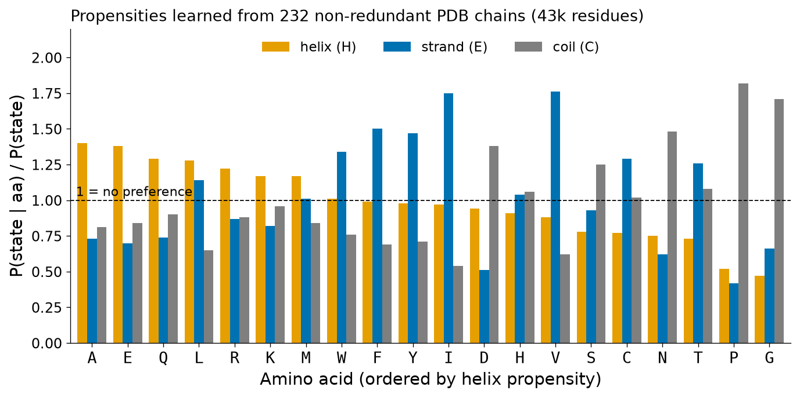
Chou and Fasman turned propensities into a prediction with empirical rules. The version implemented here follows the classical logic: (1) a helix nucleus is a window of six residues in which at least four have PH > 1.03; (2) the nucleus is extended in both directions while the average PH of a sliding four-residue window stays at or above 1.0; (3) the segment is accepted as helix if its average PH exceeds 1.03 and exceeds its average PE; (4) strands are nucleated by three strand formers (PE > 1.0) in a window of five, extended in the same way, and accepted if the average PE exceeds 1.05 and PH; (5) where a helix and a strand overlap, the state with the higher local average propensity wins; everything else is coil.
On the 57 independent test chains this predictor reached Q3 = 0.497 (0.496 on the training chains, showing that the twenty-parameter model does not over-fit), compared with 0.390 for the "always coil" baseline. On individual proteins it can do much worse (Figure 7): for β-globin Q3 = 0.281, because the many Val and Leu residues of the globin helices have high strand propensities and the method calls long strands where there are none; for ubiquitin, a mixed α/β protein, Q3 = 0.447. The fundamental limitation is that each residue is judged almost independently of its context, whereas the conformation of a residue depends on its neighbours and, ultimately, on the whole fold.
Pitfall
Propensity tables are often quoted as if they were physical constants. They are statistics of a particular data set and assignment method; they change with the data set and they describe tendencies, not rules. A valine is perfectly happy in a helix when the helix is amphipathic and the valine faces the core, as in the globins.
5.2.3 Second generation: information theory and the GOR method
Garnier, Osguthorpe and Robson (GOR) framed the problem with the information theory introduced in Unit 1[47]. The information that observing amino acid R gives about the state S of a residue is
The key improvement over Chou–Fasman is the use of a window. GOR estimates the information that the residue at relative position m (from −8 to +8) carries about the state of the central residue j, and assumes that the contributions of the 17 positions add up:
This is a naive-Bayes classifier: it treats the 17 residues as independent given the central state. Later GOR versions added pairwise terms (GOR III and IV) and multiple alignments (GOR V). Our GOR I implementation, trained on the same 232 chains, reached Q3 = 0.577 on the 57 test chains (0.593 on training), eight percentage points above our Chou–Fasman, and Q3 = 0.445 on β-globin and 0.592 on ubiquitin (Figure 7). For ubiquitin GOR correctly finds the first two β-strands and the main helix. These numbers match the historical experience that single-sequence statistical methods plateau in the 55–65 % range, and they show why: a window of local sequence carries limited information about a conformation that is partly determined by long-range interactions.
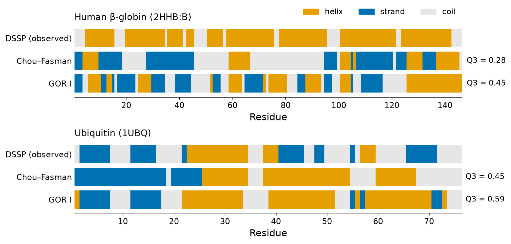
Formal detail: why the window sum is a log-likelihood ratio
Bayes' theorem gives P(S | R−8…R+8) ∝ P(S) P(R−8…R+8 | S). If the residues are conditionally independent given S, P(R−8…R+8 | S) = Πm P(Rm | S) and, dividing by the product of the marginal probabilities, log P(S | window) = log P(S) + Σm log [P(Rm | S)/P(Rm)] + constant = log P(S) + Σm I(S; Rm) + constant. GOR I omits the prior term log P(S) and therefore slightly under-predicts the most common state; adding it is a one-line change that you can test in the workshop.
5.2.4 Third generation: neural networks and evolutionary profiles (PHD, PSIPRED)
Two ideas broke the 65 % barrier. The first is that evolution preserves structure better than sequence: homologous proteins share secondary structure even when their sequences have diverged (Section 5.3.2), so a multiple alignment of homologues contains much more information about each position than a single sequence. A column in which every homologue has a hydrophobic residue every 3–4 positions strongly suggests an amphipathic helix, even if no individual residue is a strong helix former. The second idea is that a neural network can learn non-additive relationships between the residues of a window, which the independent sums of GOR cannot represent.
PHD (Rost and Sander, 1993) combined both: its input was the profile of a multiple alignment over a window of 13 residues, processed by two layers of neural networks (sequence-to-structure, then structure-to-structure to smooth predictions), and it was the first method above 70 % three-state accuracy[48]. PSIPRED (Jones, 1999) replaced the alignment profile with the position-specific scoring matrix (PSSM) produced by PSI-BLAST against a large sequence database (Unit 4A), fed a 15-residue window of the PSSM to a feed-forward network, and filtered the output with a second network; it reached a Q3 of about 76.5 %[49]. PSIPRED remains available as a web server and is still widely used.
Bridge
The PSSM is the same object used by PSI-BLAST (Unit 4A) and closely related to the profile hidden Markov models of Pfam (Unit 4B): for every position of the query it gives a log-odds score for each of the twenty amino acids, derived from the aligned homologues. Feeding evolutionary information to a learning machine is the idea that, scaled up enormously, gave AlphaFold (Section 5.3.7).
5.2.5 Modern deep learning: protein language models and current accuracy
Since about 2015 secondary-structure predictors have used deep convolutional, recurrent (LSTM) and transformer networks, larger training sets and richer inputs, and the Q3 of the best methods now exceeds 80 % in independent tests, approaching the 88–90 % ceiling[45]. Two current tools illustrate the two main strategies:
- NetSurfP-3.0 predicts secondary structure (three and eight states), relative solvent accessibility, disorder and φ/ψ angles. Instead of computing a multiple alignment, it encodes the sequence with the embeddings of the pre-trained protein language model ESM-1b, a transformer trained on hundreds of millions of sequences to predict masked residues. The authors report accuracy similar to its alignment-based predecessor NetSurfP-2.0 at a speed about two orders of magnitude higher[50].
- S4PRED is a single-sequence predictor (no homologues at all) trained by semi-supervised learning on more than a million pseudo-labelled sequences. It achieves Q3 = 75.3 % on the standard CB513 test set, compared with 70.6 % for its predecessor PSIPRED-Single, and approaches the accuracy of the original profile-based PSIPRED[51]. Single-sequence methods matter for "orphan" proteins without homologues and for designed proteins.
Today, for most proteins with homologues, the most accurate secondary structure is simply obtained by predicting the whole three-dimensional structure with AlphaFold and running DSSP on the model. Dedicated predictors remain valuable for speed (proteome scale), for single sequences and as features in other tools.
Key ideas
- "Observed" secondary structure is assigned by DSSP (8 states, reduced to H/E/C); assignments themselves are ambiguous (about 12 % disagreement between homologues; 20 % between the author HELIX records and DSSP for 2HHB chain B), which limits attainable accuracy to about 88–90 %.
- Chou–Fasman uses single-residue propensities and rules (here Q3 = 0.497 on 57 test chains); GOR uses information from a 17-residue window (Q3 = 0.577).
- Evolutionary profiles and neural networks (PHD > 70 %, PSIPRED ≈ 76.5 %) and modern deep learning (above 80 %) explain the progress; S4PRED reaches 75.3 % from a single sequence.
5.2.6 RNA secondary structure: base pairs, wobble pairs and why RNA folds hierarchically
An RNA molecule is a single strand that folds back on itself. Its secondary structure is the set of base pairs formed between nucleotides of the same strand. The canonical (Watson–Crick) pairs are G–C, with three hydrogen bonds, and A–U, with two. The G·U wobble pair, proposed by Crick to explain how one tRNA anticodon can read several codons, is geometrically shifted, has two hydrogen bonds and is common in RNA helices; secondary-structure algorithms therefore accept six pair types: GC, CG, AU, UA, GU and UG. Many other non-canonical pairs (for example sheared G·A pairs) occur in three-dimensional RNA structures but are not part of the standard secondary-structure model.
RNA folding is hierarchical: the secondary structure forms first and is energetically dominant, because stacked base pairs release far more free energy than the subsequent tertiary contacts. Therefore, unlike for proteins, the secondary structure of an RNA is a good first approximation of its overall architecture, and it can be predicted from thermodynamic principles with exact algorithms. The working example of this part is yeast tRNAPhe, whose crystal structure (PDB 1EHZ, 1.93 Å) was determined by Shi and Moore[52]. The canonical sequence of its 76 nucleotides was retrieved from the RCSB Data API; the deposited molecule carries 14 modified nucleotides (including pseudouridine, dihydrouridine, several methylated bases and the hypermodified wybutosine next to the anticodon), which the prediction programs treat as their unmodified parents.
5.2.7 Structural elements and dot-bracket notation
A secondary structure is composed of a small number of element types:
- Stem (helix): consecutive stacked base pairs (i, j), (i+1, j−1), …
- Hairpin loop: unpaired nucleotides closed by a single base pair; at least three nucleotides are needed for steric reasons.
- Bulge: unpaired nucleotides on one side only, between two stems.
- Internal (interior) loop: unpaired nucleotides on both sides between two stems.
- Multibranch loop (junction): a loop from which three or more stems radiate; the tRNA cloverleaf has a four-way junction.
- Exterior loop: unpaired nucleotides not enclosed by any pair, such as the 3′-ACCA end of tRNA.
- Pseudoknot: base pairs (i, j) and (k, l) that cross, i < k < j < l, for example when nucleotides of a hairpin loop pair with a region outside the hairpin. Pseudoknots are biologically important (ribosomal frameshifting, telomerase RNA) but are excluded by the standard algorithms below because they break the nested structure on which dynamic programming relies.
Dot-bracket notation writes a nested secondary structure as a string of the same length as the sequence: a dot for an unpaired nucleotide, an opening bracket for the 5′ partner of a pair and a closing bracket for its 3′ partner, matched like parentheses in arithmetic. Pseudoknotted pairs require additional bracket types ([ ], { }, < >). The known cloverleaf of tRNAPhe, with its acceptor stem (nucleotides 1–7 paired with 66–72), D stem (10–13 with 22–25), anticodon stem (27–31 with 39–43) and T stem (49–53 with 61–65), is written:
All 21 reference pairs are G–C, A–U or G·U, and their geometry can be checked in the crystal: the C1′–C1′ distances of the 21 pairs in 1EHZ, computed with Biopython, lie between 10.2 and 10.9 Å (mean 10.61 Å), the value expected for Watson–Crick-like pairs.
5.2.8 The Nussinov algorithm: maximising base pairs by dynamic programming
The first algorithmic formulation, by Nussinov and Jacobson in 1980, asks a simple question: which nested secondary structure has the maximum number of base pairs[53]? The number of possible structures grows exponentially with length, but the problem decomposes into sub-problems exactly as pairwise alignment does in Unit 4A. Let N(i, j) be the maximum number of pairs in the subsequence from i to j. Considering the last nucleotide j, only four situations exist: i is unpaired, j is unpaired, i pairs with j, or the subsequence splits into two independent substructures at some k (a bifurcation):
Worked example. For the toy sequence GGGAAAUCC (L = 9) with hmin = 3, the filled matrix is shown in Figure 8a. The only cells that can become non-zero are those with span ≥ 4. N(3, 7) = 1 because G3 can pair with U7 (a wobble pair) enclosing the loop AAA; N(2, 8) = N(3, 7) + 1 = 2 because G2–C8 is added; N(1, 9) = 3 with G1–C9. The traceback (shaded cells) gives the hairpin (((...))) with three pairs, G1–C9, G2–C8 and G3·U7.
Try it yourself: Nussinov in fifteen lines
def nussinov(s, hmin=3):
pairs_ok = {("G","C"),("C","G"),("A","U"),("U","A"),("G","U"),("U","G")}
n = len(s); N = [[0]*n for _ in range(n)]
for l in range(hmin + 1, n): # l = j - i, the span of the subsequence
for i in range(n - l):
j = i + l
best = max(N[i+1][j], N[i][j-1]) # i unpaired, or j unpaired
if (s[i], s[j]) in pairs_ok:
best = max(best, N[i+1][j-1] + 1) # i pairs with j
for k in range(i + 1, j): # bifurcation into two substructures
best = max(best, N[i][k] + N[k+1][j])
N[i][j] = best
return N
seq = "GGGAAAUCC"
N = nussinov(seq)
print("max pairs:", N[0][len(seq)-1])
for i, row in enumerate(N): print(seq[i], row)Add a traceback function (the workshop asks for it) and apply it to the full tRNA. You will find, as we did, a structure with many more pairs than the cloverleaf.
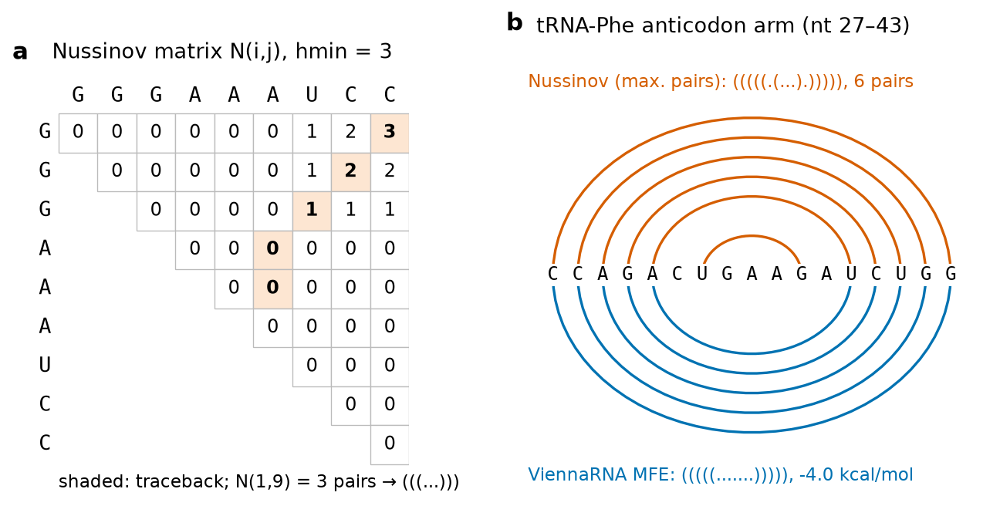
Maximising pairs is a poor model of physics. Applied to the whole 76-nucleotide tRNA, our implementation finds 28 pairs, but only 5 of them belong to the cloverleaf (Figure 9b): the algorithm prefers many isolated pairs and tiny loops, ignoring the fact that stability comes mostly from stacking between adjacent pairs and that loops cost free energy.
5.2.9 Minimum free energy: the Zuker algorithm and nearest-neighbour parameters
Zuker and Stiegler replaced pair counting by free energy[54]. In the nearest-neighbour model the free energy of a structure is the sum of the free energies of its loops, where a stack of two consecutive pairs is itself the smallest loop. Each term depends on the identity of the closing pairs and, for loops, on their size and on the first mismatching nucleotides. Stacking terms are favourable (negative) and are largest for stacks of G–C pairs; hairpin, bulge, internal and multibranch loops are unfavourable (positive), mainly for entropic reasons. The parameters are measured by optical melting of short oligonucleotides and are compiled in the Nearest Neighbor Database (NNDB) of the Turner laboratory[55]. The minimum free energy (MFE) structure is then found by a dynamic-programming recursion that has the same O(L³) structure as Nussinov's but separate matrices for structures closed by a pair, for multibranch loops and for the exterior loop. The ViennaRNA package implements these algorithms with the Turner 2004 parameter set; we used version 2.7.2[56].
Try it yourself: the energy of a stem-loop, loop by loop
On the command line, RNAeval -v decomposes the energy of a given structure. For the anticodon arm of tRNAPhe and its MFE structure (energies in units of 0.01 kcal mol−1):
printf "CCAGACUGAAGAUCUGG\n(((((.......)))))\n" | RNAeval -vThe four stacking terms (−3.3, −2.1, −2.1 and −2.4 kcal mol−1) are partly cancelled by the cost of closing the seven-nucleotide hairpin loop (+5.9 kcal mol−1), giving −4.0 kcal mol−1. The strongest stack is the CG/CG step at the base of the stem.
For the complete tRNAPhe the result is remarkable (Figure 9): the ViennaRNA MFE structure, −22.4 kcal mol−1, is exactly the cloverleaf: all 21 predicted pairs are native and no native pair is missing (sensitivity and positive predictive value both 1.0). This is not guaranteed in general. For long RNAs, such as ribosomal RNAs, MFE predictions miss a substantial fraction of the known pairs, because the energy parameters are approximate, because tertiary interactions, ions, proteins and modifications are ignored, and because many structures have energies within the error of the model.
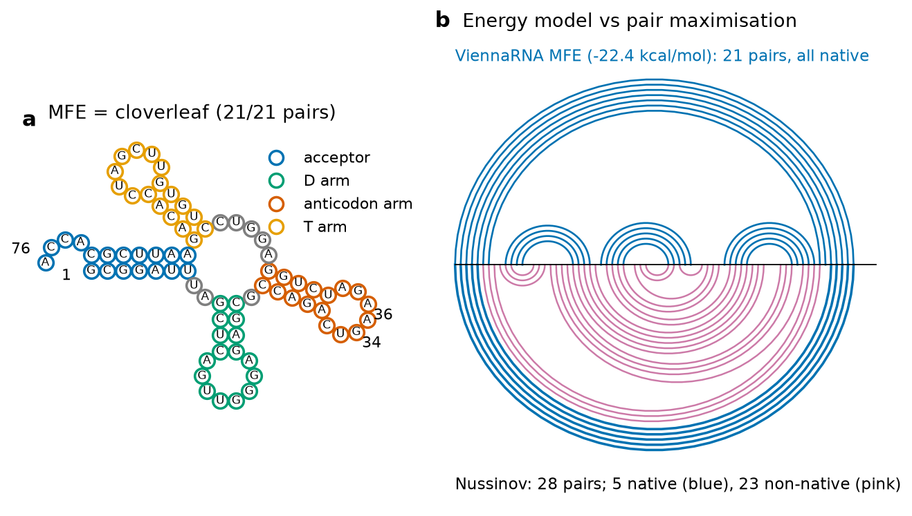
simple_xy_coordinates); circles are coloured by arm and the anticodon G34-A35-A36 is labelled. It is identical to the crystallographic cloverleaf (21/21 pairs). (b) Arc diagrams: each arc joins two paired nucleotides along the sequence (5′ at the left). Above the axis, the MFE structure (blue, all native); below, the Nussinov maximum-pair structure, in which 5 of 28 arcs are native (blue) and 23 are not (pink).5.2.10 The ensemble view: partition function and base-pair probabilities
A molecule in solution does not adopt only its MFE structure; it samples all structures with Boltzmann weights. McCaskill showed that the partition function over all nested secondary structures can be computed by a recursion of the same complexity as the MFE, and that it yields the probability of every possible base pair[57]:
For tRNAPhe the ensemble free energy is −24.13 kcal mol−1, and the MFE structure itself has a probability of only 0.061: the ensemble is diverse, even though its single most probable structure is the correct one. The base-pair probability matrix (Figure 10) shows that the acceptor stem is almost certain (mean probability of its seven pairs 0.91; P(G1–C72) = 0.977), whereas the D, anticodon and T stems compete with alternative pairings (mean probabilities 0.20, 0.26 and 0.41). In the cell the native fold is stabilised by tertiary contacts, Mg2+ ions and the modified nucleotides that the model does not include. Two consensus structures derived from the ensemble are less accurate here than the MFE: the centroid structure has 10 pairs (7 native) and the maximum-expected-accuracy (MEA) structure 20 pairs (10 native). In general, pairs with probability above about 0.9 are reliable predictions, and low probabilities signal regions to be treated with caution.
Try it yourself: MFE and pair probabilities with the ViennaRNA Python module
In Colab: !pip install ViennaRNA. The same calculation is available on the RNAfold web server of the University of Vienna.
import RNA
seq = "GCGGAUUUAGCUCAGUUGGGAGAGCGCCAGACUGAAGAUCUGGAGGUCCUGUGUUCGAUCCACAGAAUUCGCACCA" # yeast tRNA-Phe (PDB 1EHZ)
fc = RNA.fold_compound(seq)
structure, mfe = fc.mfe()
print(structure, "%.2f kcal/mol" % mfe)
fc.exp_params_rescale(mfe)
_, ensemble_energy = fc.pf()
print("ensemble free energy %.2f kcal/mol" % ensemble_energy)
print("probability of the MFE structure in the ensemble: %.3f" % fc.pr_structure(structure))
bpp = fc.bpp()
print("P(G1-C72) = %.3f P(C27-G43) = %.3f" % (bpp[1][72], bpp[27][43]))The pair-probability matrix returned by fc.bpp() is 1-based: element [i][j] is the probability that nucleotide i pairs with nucleotide j.
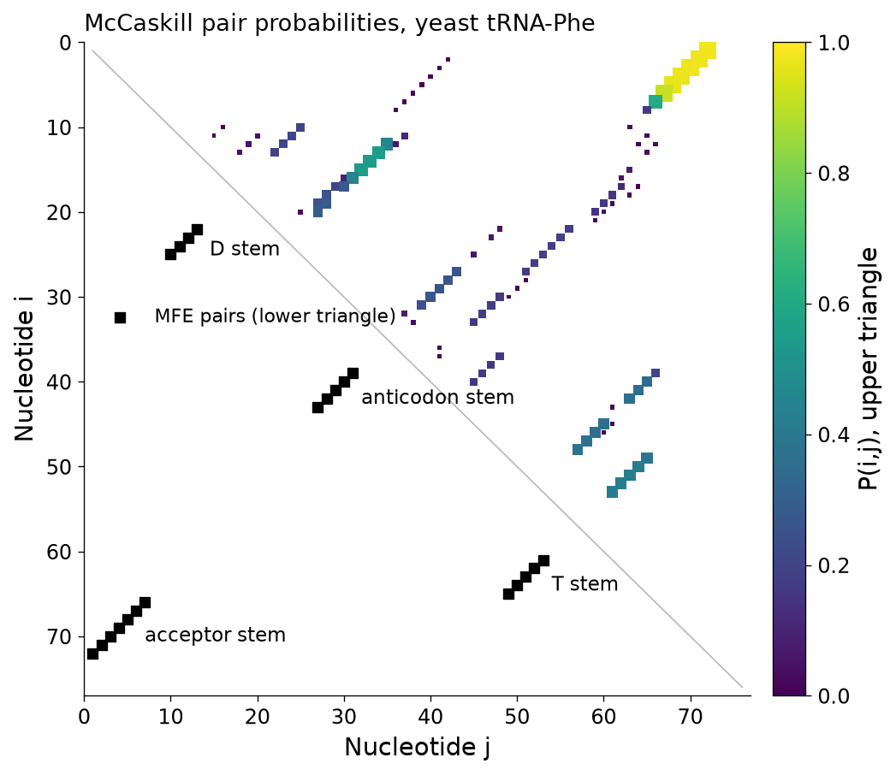
5.2.11 Comparative analysis: covariation as evidence of base pairing
The most reliable RNA secondary structures known were not predicted by energy minimisation but by comparative sequence analysis. The logic is evolutionary: if two positions are paired in a functional RNA, a mutation at one position that breaks the pair is deleterious unless a compensating mutation at the partner position restores pairing (for example G–C → A–U). Across an alignment of homologous RNAs, paired positions therefore covary, even when each position is individually variable. The ribosomal RNA structures used in textbooks were derived this way long before their crystal structures were solved, and were later confirmed almost perfectly.
Covariation is measured with the mutual information introduced in Unit 1. For two alignment columns i and j,
We tested this on the Rfam seed alignment of the tRNA family (RF00005; 954 sequences; Rfam release 15.1). After removing columns with more than 30 % gaps (71 of 118 columns kept), MI was computed for every pair of columns at least four positions apart. Of the 20 column pairs with the highest MI, 19 are base pairs of the Rfam consensus structure (Figure 11). Covariation alone, without any energy model, recovers the cloverleaf. The same principle, extended from pairs of nucleotides to pairs of amino acids and corrected for indirect correlations, is the basis of protein contact prediction and of the evolutionary module of AlphaFold (Section 5.3.7).
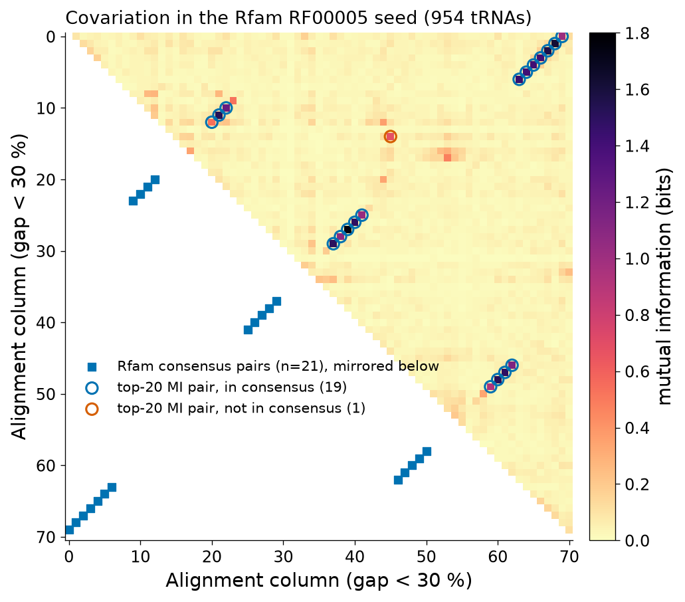
Pitfall
Covariation needs variation. Positions that are invariant across the alignment (such as the conserved CCA end or the U33 of tRNAs) give no signal however important they are, and alignments of very similar sequences produce spurious MI through shared ancestry rather than structural coupling. Correction methods (average-product correction, direct-coupling analysis) and statistical tests such as R-scape address these problems.
5.2.12 Rfam and the annotation of RNA families
Rfam is the database of RNA families, maintained at EMBL-EBI[58]. Each family is defined by a manually curated seed alignment annotated with a consensus secondary structure (the #=GC SS_cons line of the Stockholm-format file), from which a covariance model is built[59]. A covariance model is to RNA what a profile hidden Markov model is to a protein family (Unit 4B): a probabilistic model that scores both sequence conservation and base-pair covariation, and that is used by the Infernal software to search genomes. The Rfam API, queried for this document, reports for RF00005 (family "tRNA", clan CL00001) 954 seed sequences and 5,335,975 sequences in the full alignment from 14,413 species (Rfam 15.1, January 2026). Rfam families also exist for ribosomal RNAs, microRNA precursors, riboswitches, ribozymes and many regulatory RNAs; for each family the database shows the consensus structure, links to three-dimensional structures in the PDB and the species distribution.
Clinical connection
RNA secondary structure matters in medicine in several ways. Antisense oligonucleotide and siRNA drugs must bind accessible, unpaired regions of their target mRNA, which are chosen with base-pair probability calculations; mRNA vaccines are designed with codon choices and untranslated regions that control secondary structure and therefore stability and translation. Mutations in mitochondrial tRNA genes cause disease (for example the m.3243A>G variant in tRNALeu(UUR) associated with the MELAS syndrome), and part of their interpretation consists in asking whether the variant disrupts a stem of the cloverleaf.
Key ideas
- RNA secondary structure (stems, hairpins, bulges, internal and multibranch loops) is written in dot-bracket notation; pseudoknots are excluded from standard algorithms.
- Nussinov maximises pairs by dynamic programming (O(L³)); it is pedagogically clear but physically naive (5 of 28 pairs correct for tRNAPhe).
- Zuker's MFE algorithm with nearest-neighbour energies (ViennaRNA) predicts the tRNAPhe cloverleaf exactly (−22.4 kcal mol−1); the partition function gives base-pair probabilities and shows which parts of a prediction are reliable.
- Covariation (mutual information) in alignments is the strongest evidence of base pairing (19 of the top 20 MI pairs in the tRNA seed are consensus pairs); Rfam stores families as seed alignments and covariance models.
Section 5.3Prediction of the tertiary structure of proteins
Curriculum: «Predicción de la estructura terciaria de las proteínas.» — Prediction of the tertiary structure of proteins.
About 200 million protein sequences are known but only some hundreds of thousands of experimental structures exist, so for most proteins of biomedical interest the structure must be predicted. This section follows the problem historically, because each generation of methods introduced an idea that is still in use: the thermodynamic hypothesis, the conservation of structure in evolution, fold libraries, fragment assembly, blind assessment, and finally deep learning on evolutionary information. It ends with the measures used to judge any model and with a real comparison between the AlphaFold model of human β-globin and the crystal structure.
5.3.1 The folding problem: Anfinsen's hypothesis and Levinthal's paradox
In the early 1960s Christian Anfinsen unfolded bovine ribonuclease A with urea and a reducing agent, which breaks its four disulfide bonds, and observed that upon removal of the denaturants the enzyme spontaneously refolded and recovered full activity. Because only one of the 105 possible pairings of eight cysteines into four disulfides is native, refolding could not be a matter of chance. Anfinsen concluded that the native structure is the one of lowest free energy under physiological conditions and is determined by the amino-acid sequence alone: the thermodynamic hypothesis, for which he shared the 1972 Nobel Prize in Chemistry[60]. It is the theoretical licence for predicting structure from sequence.
In 1968 Cyrus Levinthal pointed out the other side of the problem[61]. If each residue of a 100-residue protein could adopt only three backbone conformations, the chain would have 3100 ≈ 5 × 1047 conformations; even sampling one every picosecond, a random search would take far longer than the age of the universe, yet proteins fold in milliseconds to seconds. Levinthal's paradox is resolved by recognising that folding is not a random search: local interactions form quickly and bias the search, and the free-energy landscape is shaped like a funnel that guides the chain towards the native state. For prediction, the lesson is that exhaustive search over conformations is impossible, so successful methods must restrict the search, which is what templates, fragments and learned distance constraints do.
Pitfall
"The sequence determines the structure" does not mean that every protein folds alone. Many proteins need chaperones to avoid aggregation, some need cofactors or partners, and a large fraction of human proteins contain long intrinsically disordered regions that have no single structure at all. Predictors trained on the PDB inherit a bias towards folded, crystallisable proteins.
5.3.2 The sequence–structure relationship and the twilight zone
Structure is conserved in evolution much more strongly than sequence. Chothia and Lesk quantified this in 1986 by superposing pairs of homologous proteins: the root-mean-square deviation of the conserved core grows smoothly as sequence identity falls, staying around 1 Å above 50 % identity and reaching 2–2.5 Å near 20 % identity, while the fold is preserved[62]. The globins are the classic example. We aligned five globin structures pairwise with TM-align (via the tmtools Python package) for this document: human β- and α-globin (both from 2HHB), sperm-whale myoglobin (1A6M), sea-lamprey haemoglobin (2LHB) and soybean leghaemoglobin (1BIN). The ten pairs (Figure 12) range from 43.2 % identity (β- vs α-globin; Cα RMSD 1.41 Å over 139 aligned residues; TM-score 0.89) down to 11.9–13.0 % for every pair involving the plant leghaemoglobin (RMSD 2.6–2.9 Å; TM-score 0.70–0.74). All ten pairs share the same fold, although the plant–animal pairs have essentially no detectable sequence similarity.
Sequence identity becomes an unreliable indicator of homology below about 25–30 %, the region that Doolittle called the twilight zone. Rost derived, from thousands of structure-based alignments, a length-dependent threshold above which two sequences almost certainly share structure[63]:
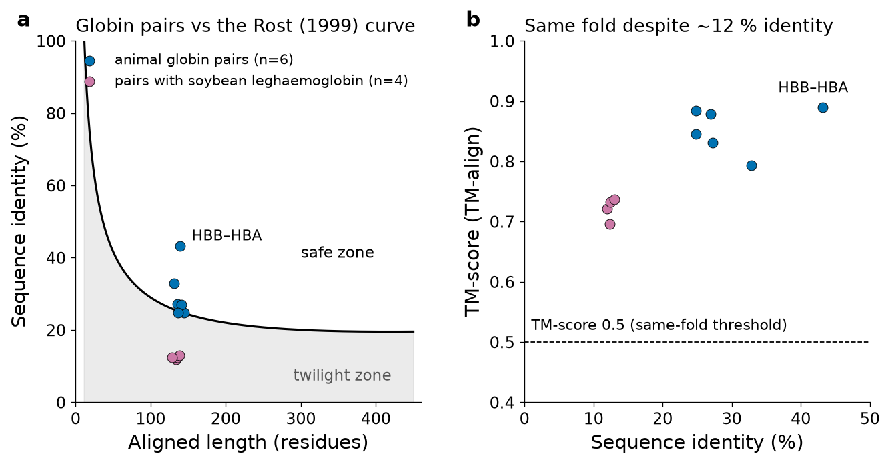
Two consequences shape the whole field. First, if a protein of known structure with detectable sequence similarity exists, it provides an excellent starting model (template-based or homology modelling). Second, many proteins with no detectable sequence relative still have a structural relative, so methods that recognise folds rather than sequences (threading) can extend the reach of templates.
5.3.3 Homology (comparative) modelling, step by step
Comparative modelling builds a model of a target sequence on the experimental structure of one or more homologous templates. It proceeds in six steps:
- Template search. The target sequence is searched against the sequences of the PDB with BLAST, or with more sensitive profile methods (PSI-BLAST, HMMER, HHblits/HHpred) for distant relatives. Candidate templates are ranked by E-value, identity, coverage, resolution and state (apo or ligand-bound, oligomeric state).
- Target–template alignment. The alignment determines which target residue occupies which template position, and it is the single largest source of error at low identity: an insertion displaced by four residues shifts a whole helical turn. Profile–profile and structure-aware alignments, and manual correction guided by secondary structure and conserved motifs, reduce errors.
- Model building. Coordinates of aligned backbone positions are copied or used to derive restraints. MODELLER, by Šali and Blundell, extracts distance and dihedral-angle restraints from the template and builds the model that best satisfies them together with stereochemical terms, by optimisation of a probability density function[64]. SWISS-MODEL, a fully automated web server, assembles the model from rigid fragments of the template and rebuilds the rest[65].
- Loop modelling. Insertions relative to the template and poorly aligned regions are rebuilt either by searching a database of loop fragments that fit the anchor geometry or by ab initio sampling. Loops longer than 8–10 residues are rarely modelled accurately.
- Side-chain modelling and refinement. Side chains are placed using rotamer libraries (conformations observed in high-resolution structures) and packed to avoid clashes; short energy minimisation or molecular dynamics relieves strain, although refinement seldom moves a model closer to the true structure.
- Validation. The model is checked with the same geometric tools as experimental structures (Ramachandran plot, clashes; Section 5.1.5) and with statistical potentials or learned quality scores such as QMEAN (in SWISS-MODEL) that estimate local and global accuracy without knowing the true structure.
Accuracy depends mainly on target–template identity: above about 50 % models can be close to experimental quality; between 30 and 50 % the core is usually correct within 1.5–2 Å but loops and side chains are uncertain; below 30 % alignment errors dominate. Comparative modelling remains useful even in the AlphaFold era, for example to model a specific conformational state (an inactive kinase, a ligand-bound receptor) by choosing a template in that state.
Try it yourself: SWISS-MODEL
- Copy the sequence of human myoglobin (UniProt P02144) from rest.uniprot.org/uniprotkb/P02144.fasta.
- Open swissmodel.expasy.org, choose "Start Modelling", paste the sequence and click "Search For Templates".
- Inspect the template list: note the sequence identity, coverage, method and resolution of the top templates and whether they are oxy- or deoxy-myoglobin.
- Build a model from the best template and examine its QMEAN score and the local quality plot. Download the model and superpose it on 1A6M in Mol* or ChimeraX (
matchmaker).
5.3.4 Threading and fold recognition
When no template can be found by sequence, the target may still adopt a known fold: the number of distinct folds in nature is limited (of the order of a thousand or a few thousand) and most new structures belong to known folds. Threading, introduced by Jones, Taylor and Thornton in 1992[66], reverses the logic of prediction: instead of building a structure for the sequence, it "threads" the sequence through each fold of a library and scores how compatible the sequence is with each structural environment, using statistical potentials (a hydrophobic residue in a buried position scores well; a charged one does not; pairwise residue contacts are scored by their frequency in known structures). The fold with the best score, if significant, is the prediction, and the threading alignment is used to build the model as in comparative modelling. Modern fold recognition (for example HHpred, Phyre2, I-TASSER) combines profile–profile alignment with predicted secondary structure and accessibility, and the boundary between threading and sensitive homology detection has largely disappeared.
5.3.5 Ab initio prediction and fragment assembly (Rosetta)
For proteins with no recognisable template, template-free (ab initio, de novo) methods search conformational space guided by an energy function. Purely physical simulations remain too expensive for most proteins, so the breakthrough came from a hybrid idea: the local structure of a short segment is strongly, though not completely, determined by its local sequence, and the PDB contains examples of almost every local conformation. Rosetta, developed in David Baker's laboratory, builds structures by fragment assembly[67]: for every 3- and 9-residue window of the target, it collects a library of fragments from proteins of known structure with similar sequence profiles and predicted secondary structure; it then starts from an extended chain and performs a Monte Carlo search in which each move replaces the backbone dihedral angles of one window by those of a fragment, accepting or rejecting the move by the Metropolis criterion on a low-resolution energy function (hydrophobic burial, strand pairing, compactness). Thousands of independent runs produce decoys that are clustered; the centre of the largest cluster is often the best prediction, followed by all-atom refinement. In the 2000s Rosetta could fold small proteins (below ~100 residues) to 3–6 Å in favourable cases, and the same software, run "in reverse" to find sequences for a desired structure, founded computational protein design, recognised by the 2024 Nobel Prize (Section 5.3.8).
5.3.6 CASP: blind assessment of prediction methods
Claims of accuracy are easy to make when the answer is known. The Critical Assessment of protein Structure Prediction (CASP), started by John Moult and colleagues in 1994, organises a blind experiment every two years[68]: sequences of proteins whose structures are about to be determined experimentally are released as targets, groups submit predictions before the experimental structures are public, and independent assessors compare predictions with the experimental structures using metrics such as GDT_TS (Section 5.3.10). Targets are classified as template-based or free-modelling according to whether a template existed. For two decades progress in free modelling was slow. In CASP13 (2018) the first AlphaFold, which predicted inter-residue distance distributions with a deep network and folded the chain by gradient descent on the resulting potential[69], was clearly best; in CASP14 (2020) AlphaFold2 reached accuracy competitive with experiment for most targets[70][71]. CASP continues, now with emphasis on complexes, RNA, ligands and ensembles.
5.3.7 Deep learning I: how AlphaFold2 works
AlphaFold2 (Jumper et al., 2021) is a deep neural network trained end-to-end on structures from the PDB to output all heavy-atom coordinates of a protein from its sequence[71]. Its design can be understood in three stages:
- Inputs: multiple sequence alignment and templates. The target sequence is searched against large sequence databases (UniRef, metagenomic collections) to build an MSA, and optionally against the PDB for templates. As Section 5.2.11 showed for RNA, the MSA contains covariation information: residues in contact tend to co-evolve. The network receives the MSA (as an Nseq × L representation) and a pair representation (L × L) initialised from relative positions and templates.
- The Evoformer. A trunk of 48 blocks repeatedly updates the MSA representation and the pair representation and lets them exchange information. Attention operations along rows and columns of the MSA extract co-evolutionary signals; "triangle" updates and triangle attention in the pair representation enforce geometric consistency (if residue i is close to j and j to k, the distance i–k is constrained, as in the triangle inequality). After the Evoformer the pair representation encodes, in effect, a predicted distance and orientation map.
- The structure module. Each residue is treated as a rigid body (a "backbone frame" with position and orientation) that starts at the origin. Invariant point attention, a form of attention that is independent of global rotation and translation, iteratively moves and rotates the frames to build the 3D backbone, and side-chain torsion angles are predicted to place all atoms. The whole network is run three times with its own outputs fed back ("recycling"), and a final relaxation with a force field removes clashes.
The network is trained to minimise the frame-aligned point error between predicted and true atomic positions, together with auxiliary losses; it also learns to predict its own error (Section 5.3.9). In CASP14 the median backbone accuracy of AlphaFold2 was 0.96 Å r.m.s.d.95 (Cα RMSD over the best 95 % of residues), against 2.8 Å for the next best method[71]. The code and weights were made public, and in collaboration with EMBL-EBI predictions were computed for almost every known protein sequence: AlphaFold DB now covers more than 214 million sequences[36][37].
Bridge
The lecture document 02 Protein Structure Prediction (Sections 9 and 10) introduces the machine-learning vocabulary (embeddings, attention, transformers) needed to read the AlphaFold paper in detail, and discusses evaluation in CASP. Here we only need the architecture at the level of its three stages.
5.3.8 Deep learning II: RoseTTAFold, ESMFold, AlphaFold3 and the 2024 Nobel Prize
RoseTTAFold (Baek et al., 2021), from the Baker laboratory, uses a three-track network in which one-dimensional sequence, two-dimensional distance and three-dimensional coordinate information are processed simultaneously and exchange information; it approached AlphaFold2 accuracy, was released openly, and could model protein–protein complexes[72]. ESMFold (Lin et al., 2023) dispenses with the MSA altogether: it uses the internal representations of the ESM-2 protein language model, in its 3-billion-parameter version (the ESM-2 family was scaled up to 15 billion), from which atomic-level structure emerges, and predicts structures an order of magnitude faster than MSA-based methods; its authors predicted more than 617 million metagenomic proteins, more than 225 million with high confidence (the ESM Metagenomic Atlas)[73]. ESMFold is somewhat less accurate than AlphaFold2 for proteins with few homologues but is ideal for large-scale screening. AlphaFold3 (Abramson et al., 2024) replaces the structure module with a diffusion model that generates atomic coordinates by iterative denoising and predicts the joint structure of complexes containing proteins, nucleic acids, small molecules, ions and modified residues; the authors report far greater accuracy than docking tools for protein–ligand interactions in their benchmarks[74].
The 2024 Nobel Prize in Chemistry was divided: one half to David Baker "for computational protein design", and the other half jointly to Demis Hassabis and John Jumper "for protein structure prediction"[75]. The prize recognises both directions of the sequence–structure problem: predicting the structure of a given sequence and designing sequences for a desired structure.
Clinical connection
Predicted structures are now routinely used to interpret missense variants, to choose antigen constructs for vaccines, to design antibodies and binders, and as starting points for structure-based drug design when no experimental structure exists. The AlphaMissense predictor, derived from AlphaFold, scores every possible missense variant of the human proteome for likely pathogenicity[44]; its annotation file for human β-globin (P68871), downloaded from AlphaFold DB for this document, contains 2,793 scored substitutions. The result for the sickle-cell substitution is instructive: E7V (UniProt numbering, which counts the initiator methionine; β6 in the mature protein) receives a pathogenicity score of 0.223 and the class "likely benign", and the HbC substitution E7K receives 0.270, also "likely benign". Both are unambiguously pathogenic. The reason is mechanistic: these variants do not destabilise or misfold the β chain, which is what the predictor is good at recognising from evolutionary and structural context; they create (HbS) or alter (HbC) an intermolecular behaviour of an otherwise normal protein. Such scores are research tools, never diagnoses, and must be interpreted together with clinical, genetic and functional evidence.
5.3.9 Confidence metrics: pLDDT and PAE
AlphaFold predicts not only coordinates but also its own expected error, and these confidence estimates are essential for using a model correctly.
- pLDDT (predicted local distance difference test, 0–100) is a per-residue estimate of the lDDT-Cα score (Section 5.3.10) that the residue would have if compared with the true structure. By convention pLDDT > 90 is "very high" confidence (backbone and side chains generally accurate), 70–90 "confident" (backbone generally correct), 50–70 "low" and < 50 "very low"; very low regions are often intrinsically disordered rather than mispredicted. In AlphaFold PDB files pLDDT is stored in the B-factor column.
- PAE (predicted aligned error, in Å) is a matrix: element (x, y) is the expected position error of residue y when the predicted and true structures are superposed on residue x. Low PAE between two domains means that their relative position is reliable; high PAE means that each domain may be right but their arrangement is not.
For human β-globin, the AlphaFold DB entry AF-P68871-F1 (model version 6, produced with the AlphaFold Monomer v2.0 pipeline and downloaded from alphafold.ebi.ac.uk for this document) has a mean pLDDT of 97.2; 97.3 % of residues are "very high", 2.0 % "confident" and 0.7 % (one residue) "low" (Figure 13). The single low-confidence residue is the initiator Met1 (pLDDT 61.1), which is removed from the mature protein and is absent from every crystal structure. The PAE matrix is uniformly low (median 2 Å), indicating that the whole chain is predicted as one confidently positioned unit.
5.3.10 Evaluating models: RMSD after Kabsch superposition, GDT_TS, TM-score and lDDT
RMSD. The root-mean-square deviation between two sets of N corresponding atoms (usually Cα atoms) is the square root of the mean squared distance. Because two structures are in arbitrary coordinate frames, RMSD is meaningful only after the optimal superposition: the rotation and translation that minimise it. The translation is found by moving both centroids to the origin; the optimal rotation is found by the Kabsch algorithm[76] using the singular value decomposition of the covariance matrix.
Formal detail: the Kabsch algorithm
Let P and Q be N × 3 matrices of corresponding coordinates, already centred (each column has mean zero). We seek the rotation matrix R that minimises
Expanding the square shows that minimising the RMSD is equivalent to maximising the trace of R H, with H = Pᵀ Q the 3 × 3 covariance matrix. Writing the singular value decomposition H = U S Vᵀ, the maximum is reached for
The minimal RMSD can also be computed without forming R, from the singular values: N·RMSD² = Σ‖pk‖² + Σ‖qk‖² − 2(s1 + s2 + d·s3).
Try it yourself: superpose the AlphaFold model on the crystal structure
import urllib.request, numpy as np
from Bio.PDB import PDBParser
urllib.request.urlretrieve("https://alphafold.ebi.ac.uk/files/AF-P68871-F1-model_v6.pdb", "AF_HBB.pdb")
p = PDBParser(QUIET=True)
xray = [r for r in p.get_structure("x", "2HHB.pdb")[0]["B"] if r.id[0] == " "]
model = {r.id[1]: r for r in p.get_structure("m", "AF_HBB.pdb")[0]["A"]}
# UniProt numbering includes the initiator Met: mature residue i = UniProt residue i+1
P = np.array([model[r.id[1] + 1]["CA"].coord for r in xray], float)
Q = np.array([r["CA"].coord for r in xray], float)
def kabsch_rmsd(P, Q):
P0, Q0 = P - P.mean(0), Q - Q.mean(0)
U, S, Vt = np.linalg.svd(P0.T @ Q0)
d = np.sign(np.linalg.det(Vt.T @ U.T))
R = Vt.T @ np.diag([1, 1, d]) @ U.T
return np.sqrt((((P0 @ R.T) - Q0) ** 2).sum(1).mean())
print("pairs:", len(P))
print("RMSD without superposition: %.2f A" % np.sqrt(((P - Q) ** 2).sum(1).mean()))
print("RMSD after Kabsch superposition: %.3f A" % kabsch_rmsd(P, Q))
plddt = np.array([model[k]["CA"].get_bfactor() for k in sorted(model)])
print("mean pLDDT %.1f; residues with pLDDT < 70: %d" % (plddt.mean(), (plddt < 70).sum()))The 61 Å RMSD before superposition only reflects the different coordinate frames; after Kabsch superposition the model and the crystal structure differ by 0.49 Å over 146 Cα atoms. Biopython's Superimposer gives the same value (0.487 Å).
RMSD has two weaknesses: it depends on the number of atoms compared, and it is dominated by the worst regions, so a model with a perfect core and one misplaced terminal helix can have a large RMSD. Three alternative scores address this:
- GDT_TS (global distance test, total score) is the average, over the distance cut-offs 1, 2, 4 and 8 Å, of the largest percentage of Cα atoms that can be superposed within the cut-off, each cut-off with its own optimal superposition[77]. It ranges from 0 to 100 and was the main CASP metric.
- TM-score weights every residue pair by a length-dependent function, so that close pairs dominate and the score is comparable across protein sizes[78]:
TM = maxsuperposition (1/Lref) Σi 1 / [1 + (di/d0)²], d0 = 1.24 (Lref − 15)1/3 − 1.8 where di is the distance between the i-th pair of aligned residues and Lref the length of the reference. TM-score lies in (0, 1]; values around 0.17 are expected for unrelated structures and values above 0.5 indicate the same fold.
- lDDT (local distance difference test) is superposition-free: for every pair of atoms within 15 Å in the reference, it checks whether their distance in the model is preserved within 0.5, 1, 2 and 4 Å, and averages the fractions[79]. Being local, it is insensitive to domain movements; pLDDT is AlphaFold's prediction of it.
For the AlphaFold β-globin model against 2HHB chain B we computed (own implementations, Cα atoms, 146 residues): RMSD 0.49 Å; heavy-atom RMSD after the Cα superposition 1.02 Å (1,123 atoms), reflecting small side-chain differences; GDT_TS 99.5; TM-score 0.989 (TM-align gives the same value); Cα-lDDT 0.977. The largest per-residue deviation, 1.43 Å, is at the flexible N-terminal Val1 (Figure 13b). For comparison, the β chains of deoxy-HbA (2HHB) and deoxy-HbS (2HBS), which differ in one residue, superpose with RMSD 0.36 Å and TM-score 0.994: the sickle mutation does not perturb the fold of the chain.
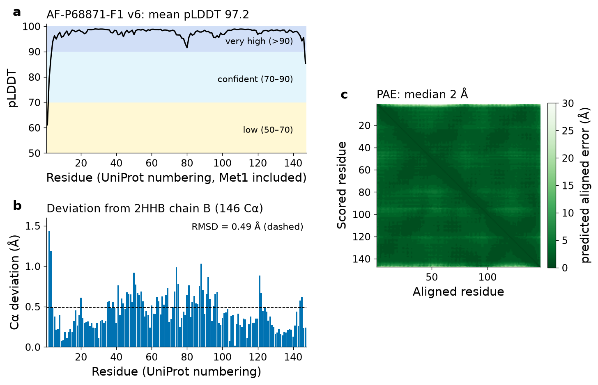
5.3.11 Limitations of current structure prediction
The success of AlphaFold has generated a frequent misconception: that the structure problem is solved. It is solved for one important case, the static structure of a single well-folded chain with sufficient evolutionary information. Important limitations remain:
- Complexes and quaternary structure. AlphaFold-Multimer, RoseTTAFold and AlphaFold3 predict complexes, but accuracy is lower than for monomers and the stoichiometry must be supplied. The AlphaFold DB entry for β-globin is a monomer: it shows nothing of the α2β2 tetramer or of the haem.
- Ligands, cofactors and post-translational modifications. AlphaFold2 predicts apo structures; the haem pocket of the β-globin model is empty. AlphaFold3 and co-folding methods add ligands, but independent benchmarks show that physically invalid poses and memorisation of training examples remain issues[80].
- Dynamics and alternative states. A single model cannot represent the T↔R allosteric transition of haemoglobin, the opening of a channel or the activation of a receptor. Molecular dynamics (companion document 05) and experimental methods remain necessary.
- Intrinsic disorder. Low-pLDDT regions are usually disordered; they should not be interpreted as structure.
- Point mutations. AlphaFold is not trained to predict the structural effect of a single substitution and typically returns almost the same model for a mutant; it cannot by itself explain why HbS polymerises, because that property depends on a new intermolecular contact (Section 5.1 and running case).
- Orphan and designed proteins. Without homologues, MSA-based accuracy drops; language-model methods help partly.
Key ideas
- Anfinsen: the sequence encodes the native, lowest-free-energy structure; Levinthal: folding cannot be a random search, and prediction cannot be exhaustive.
- Structure diverges more slowly than sequence: globins with 12 % identity still share the fold (TM-score 0.70–0.74). Below ~25–30 % identity (the twilight zone) homology cannot be inferred from identity alone.
- Homology modelling: template search → alignment → building (MODELLER, SWISS-MODEL) → loops → side chains and refinement → validation. Threading recognises folds; Rosetta assembles fragments by Monte Carlo.
- CASP provides blind assessment; AlphaFold2 (MSA + Evoformer + structure module) reached near-experimental accuracy in CASP14; RoseTTAFold, ESMFold and AlphaFold3 extend the approach; the 2024 Nobel Prize recognised Baker, Hassabis and Jumper.
- Use pLDDT and PAE before using a model; compare models with RMSD (after Kabsch superposition), GDT_TS, TM-score and lDDT. The AlphaFold β-globin model is within 0.49 Å of the crystal structure.
Section 5.4Prediction of molecular interactions (docking)
Curriculum: «Predicción de interacciones moleculares (docking).» — Prediction of molecular interactions (docking).
Most drugs act by binding to a protein. If the three-dimensional structure of the target is known, experimentally or from a model, one can ask computationally how a given molecule would bind, how strongly, and which molecules in a library are most likely to bind at all. Molecular docking answers the first question directly and the other two approximately. This section introduces the concepts, the two components of every docking program (search and scoring), the difference between small-molecule and protein–protein docking, virtual screening, and the indispensable validation experiments. No docking is run here; instead, the section uses the re-docking experiment performed and documented in the companion lecture document 03 Molecular Docking, which you should read next.
5.4.1 Concepts: receptor, ligand, binding site, pose and score
The receptor is the macromolecule (usually a protein) and the ligand the molecule that binds to it (usually a small organic molecule of 150–700 Da, sometimes a peptide or another protein). The binding site is the region of the receptor where the ligand binds; when it is not known from a complex it can be located with pocket-detection algorithms that look for concave, buried regions of the surface. A pose is one specific placement of the ligand: its position (3 degrees of freedom), orientation (3) and internal conformation (one torsion angle per rotatable bond). A docking program generates many poses (the search) and ranks them with a scoring function that approximates the binding free energy ΔGbind, related to the dissociation constant by
Docking thus solves two problems at once: pose prediction (where and how the ligand binds, which docking does reasonably well) and affinity prediction or ranking (how strongly, which it does poorly). Before docking, receptor and ligand must be prepared: hydrogen atoms added and protonation states assigned at physiological pH (histidine tautomers, charged aspartates), partial charges computed, and decisions made about water molecules, metal ions and cofactors. The companion document shows that most docking errors are introduced at this stage.
The first docking program, DOCK, published by Kuntz and colleagues in 1982, represented the binding site as a set of spheres filling its cavity and matched ligand atoms to sphere centres geometrically[81]. The two components it introduced, a search over placements and a score for each, structure all later programs.
5.4.2 Search algorithms: systematic and stochastic, rigid and flexible
The number of possible poses is enormous: a drug-like ligand with 8 rotatable bonds sampled every 30° has 128 ≈ 4 × 108 internal conformations before position and orientation are considered. Search algorithms fall into two families:
- Systematic methods explore the degrees of freedom in a regular way. In incremental construction (used by FlexX and DOCK) the ligand is cut into fragments, a rigid anchor is placed first and the rest is grown torsion by torsion, pruning poor partial poses. Exhaustive grid searches over rigid conformers (as in Glide's initial stages) are another variant.
- Stochastic methods sample randomly but with bias. Monte Carlo methods perturb the current pose (a random translation, rotation or torsion change) and accept the new pose with the Metropolis probability min[1, exp(−ΔE/kT)], so that uphill moves are occasionally allowed and the search can escape local minima; simulated annealing lowers the temperature gradually. Genetic algorithms (GOLD) encode a pose as a "chromosome" of position, orientation and torsion genes and evolve a population by selection, crossover and mutation. The Lamarckian genetic algorithm of AutoDock 4 adds a local energy minimisation to each individual and writes the optimised genes back into the chromosome, as if acquired characteristics were inherited[82]. AutoDock Vina combines Monte Carlo steps with quasi-Newton (BFGS) local optimisation using analytical gradients[83].
Flexibility is the other axis. Almost all programs treat the ligand as flexible. The receptor is usually rigid, a strong approximation because binding often induces side-chain rotations and loop movements (induced fit) or selects one conformation from a pre-existing ensemble (conformational selection). Partial solutions are to allow selected side chains to rotate (flexible-residue docking in Vina and AutoDock), to soften the repulsive term of the score, or to dock into an ensemble of receptor conformations taken from several crystal structures or from molecular-dynamics snapshots (companion document 05).
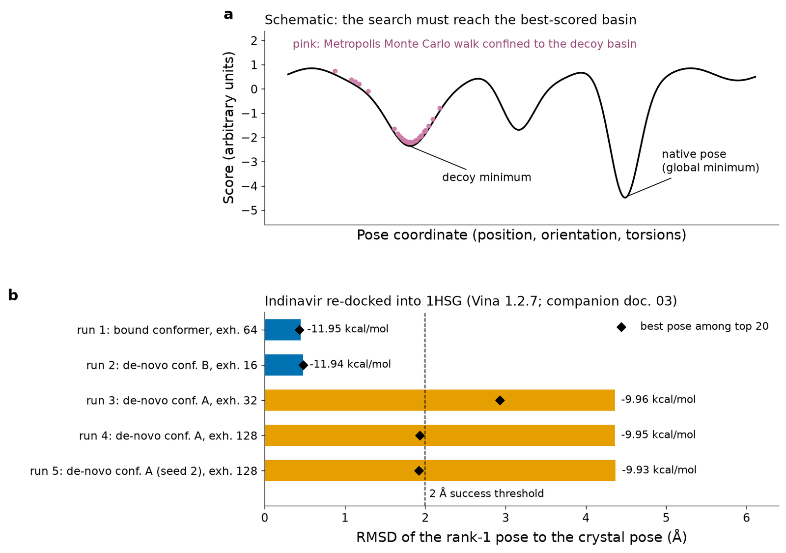
5.4.3 Scoring functions: force-field, empirical, knowledge-based and machine-learning
The scoring function must be fast enough to evaluate millions of poses, so it is a drastic simplification of the physics of binding (electrostatics, van der Waals contacts, hydrogen bonds, desolvation, and loss of conformational entropy). Four families exist:
- Force-field-based scores sum non-bonded interaction energies from a molecular-mechanics force field (Lennard-Jones and Coulomb terms), sometimes with an implicit-solvent desolvation term; DOCK and AutoDock 4 use such scores, pre-computed on grids for speed.
- Empirical scores are weighted sums of physically motivated terms (hydrogen bonds, ionic interactions, lipophilic contact area, number of frozen rotatable bonds), with weights fitted by regression to measured affinities of complexes of known structure; Böhm's 1994 function is the prototype[84], and ChemScore, GlideScore and the Vina score belong to this family (Vina's terms are derived partly from knowledge-based statistics).
- Knowledge-based scores convert the observed frequencies of atom-pair distances in the PDB into pseudo-potentials by inverse Boltzmann statistics, E(r) = −kT ln[g(r)/gref(r)]; the potential of mean force (PMF) score of Muegge and Martin is an example[85]. This is the same logic as the propensities of Section 5.2.2: frequent arrangements are assumed to be favourable.
- Machine-learning scores learn the relationship between features of a complex and its affinity from large training sets, typically PDBbind[40]. They can outperform classical scores on benchmarks similar to their training data but may generalise poorly to new targets.
Vina scores are expressed in kcal mol−1, but they are not measured free energies: correlations between docking scores and experimental affinities across different ligands are generally weak. Scores are most useful to rank poses of the same ligand and, with caution, to prioritise molecules in a screen.
Pitfall
A docking score of −11.9 kcal mol−1 does not mean Kd ≈ 2 nM. The scoring function ignores most of the entropy of binding, treats water crudely and was fitted on a particular data set. Compare scores only within one protocol and target, and never report a docking score as an affinity.
5.4.4 Protein–ligand versus protein–protein docking
Docking two proteins is a different problem. The interfaces are large (typically 1,200–2,000 Å2 of buried surface) and relatively flat, both partners are flexible, and there is no small, well-defined pocket. Two main approaches are used:
- Rigid-body global search with the fast Fourier transform (FFT). Both proteins are mapped onto 3D grids, and shape complementarity and simple energy terms are evaluated for all relative translations at once by FFT correlation, for tens of thousands of rotations. The best-scoring poses are clustered and refined. The ClusPro web server is a widely used implementation (PIPER algorithm)[86].
- Information-driven docking. HADDOCK converts experimental or bioinformatic knowledge about interface residues (from mutagenesis, NMR chemical-shift perturbations, cross-linking or conservation) into ambiguous interaction restraints that drive a flexible docking protocol with simulated annealing[87].
Deep-learning complex predictors (AlphaFold-Multimer, RoseTTAFold, AlphaFold3; Section 5.3.8) now often outperform classical protein–protein docking when the two partners have co-evolutionary signals, but antibody–antigen complexes and transient interactions remain difficult.
5.4.5 Virtual screening and enrichment
In structure-based virtual screening a library of compounds, from thousands to billions, is docked into a target and the best-ranked compounds are purchased and tested experimentally. Its purpose is not to predict affinities but to enrich the top of the ranked list with true binders compared with random selection. Ultra-large screens of make-on-demand libraries have discovered new chemotypes with nanomolar potency[88]. Screening performance is evaluated retrospectively on sets of known actives mixed with decoys, molecules with similar physicochemical properties that are presumed inactive, such as those of the DUD-E benchmark[89]. Common metrics are:
For example, if a library of 10,000 compounds contains 50 actives and the top 1 % (100 compounds) contains 10 of them, EF1% = (10/100)/(50/10,000) = 20.
Clinical connection
Structure-based design has produced approved drugs. The HIV-1 protease inhibitors are the classic case: indinavir, whose complex with the protease is the PDB entry 1HSG[91], was optimised with the help of crystal structures of the enzyme. Virtual screening is now routine in pharmaceutical and academic drug discovery, and the computer-aided drug design pipeline is treated in companion document 04.
5.4.6 Validation: re-docking RMSD and the 1HSG experiment
A docking protocol is credible only if it reproduces known answers for the target of interest. The standard test is re-docking: take a crystal structure of a complex, remove the ligand, dock it back and measure the symmetry-corrected heavy-atom RMSD between the top-ranked pose and the crystallographic pose. An RMSD below 2.0 Å is conventionally considered a success. Cross-docking (docking the ligand of one complex into the receptor structure of another complex of the same protein) is a harder and more realistic test, because the receptor was not shaped around that ligand. For virtual screening, retrospective enrichment on actives and decoys is the corresponding validation.
Companion document 03 performed a re-docking experiment of indinavir (45 heavy atoms, 11 rotatable bonds) into HIV-1 protease (1HSG, X-ray, 2.0 Å) with AutoDock Vina 1.2.7[92], retaining the conserved flap water and using a 26 × 22 × 22 Å box. Scoring the crystallographic pose as deposited gave −11.30 kcal mol−1, and after local optimisation −11.73 kcal mol−1. Five docking runs gave the following results (values copied from document 03; Figure 14b):
| Run | Input conformer | Exhaustiveness | Best score (kcal mol−1) | RMSD of rank-1 pose (Å) | Best RMSD in top 20 (Å) |
|---|---|---|---|---|---|
| 1 | crystallographic (bound) | 64 | −11.95 | 0.45 | 0.43 |
| 2 | de novo conformer B (3.36 Å from bound) | 16 | −11.94 | 0.48 | 0.48 |
| 3 | de novo conformer A (4.20 Å from bound) | 32 | −9.96 | 4.36 | 2.93 |
| 4 | de novo conformer A | 128 | −9.95 | 4.36 | 1.93 |
| 5 | de novo conformer A, different seed | 128 | −9.93 | 4.37 | 1.92 |
The interpretation is the most important lesson of docking validation. When the native basin was reached (runs 1 and 2), Vina scored it about 2 kcal mol−1 better than anything else, so the scoring function ranked correctly. When the search started from conformer A it never reached that basin, even with four times more sampling or a different random seed: the failure was a search failure, caused by the fixed internal geometry (ring conformations) of the input conformer, which Vina does not change. Re-docking from the crystallographic conformer is therefore an optimistic test; realistic validation starts from independently generated conformers, and several should be tried.
Bridge
Read 03 Molecular Docking, Sections 4 (preparation), 5–6 (search and scoring in depth) and 7 (this experiment, with the contact analysis of the crystallographic complex and the score-versus-RMSD plot of all 100 poses). Docking results are then refined and rescored by molecular dynamics and free-energy methods in 05 Molecular Dynamics, and embedded in the drug-discovery pipeline in 04 Computer-Aided Drug Design.
5.4.7 Docking software
| Program | Search | Scoring | Access |
|---|---|---|---|
| AutoDock 4[82] | Lamarckian genetic algorithm | force-field-based, empirically weighted | open source |
| AutoDock Vina 1.2[83][92] | Monte Carlo + BFGS local optimisation | empirical/knowledge-based hybrid; also AutoDock 4 and Vinardo scores | open source, Python bindings |
| GOLD[93] | genetic algorithm | GoldScore, ChemScore, ChemPLP, ASP | commercial (CCDC) |
| Glide[94] | hierarchical systematic filters, then Monte Carlo refinement | GlideScore (empirical) | commercial (Schrödinger) |
| rDock[95] | genetic algorithm, Monte Carlo and simplex stages | empirical intermolecular + restraint terms | open source, high-throughput |
| DiffDock[96] | generative diffusion model over translations, rotations and torsions | learned confidence model | open source (deep learning) |
| HADDOCK, ClusPro[87][86] | restraint-driven flexible docking; FFT rigid-body search | physics-based and empirical terms | web servers (protein–protein) |
Deep-learning docking methods such as DiffDock generate poses without an explicit search over a physical score. The PoseBusters benchmark showed that many such methods produced a large fraction of poses with physically implausible features (incorrect bond lengths, stereochemistry or clashes) and generalised less well than classical programs to proteins dissimilar to their training data[80]. Checking the physical validity of every pose, whatever the method, is therefore part of good practice.
Key ideas
- Docking = search over poses (position, orientation, torsions) + scoring (approximate ΔGbind); it predicts poses better than affinities.
- Search: systematic (incremental construction) or stochastic (Monte Carlo, GA, Lamarckian GA); ligand flexible, receptor usually rigid (ensembles and flexible side chains as partial remedies).
- Scoring: force-field, empirical, knowledge-based and machine-learning functions; scores are not measured affinities.
- Protein–protein docking uses FFT global search (ClusPro) or data-driven restraints (HADDOCK).
- Validate by re-docking (RMSD < 2 Å), cross-docking and enrichment (EF, ROC, BEDROC). In 1HSG, failures came from the search (input conformer), not from the score.
Running caseHaemoglobin S in three dimensions
In Units 1–4 the sickle-cell mutation was a single-nucleotide change (rs334, GAG→GTG in codon 6 of HBB) and a single amino-acid change (Glu6Val in the mature β chain; E7V in UniProt numbering). This unit explains why such a small change has such large consequences: the substitution places a hydrophobic residue on the surface of the deoxygenated tetramer exactly where it can fit into a hydrophobic pocket of a neighbouring tetramer.
Running case 1: the structures used
- 2HHB: human deoxyhaemoglobin A, X-ray, 1.74 Å, R = 0.160, one α2β2 tetramer (chains A–D) in the asymmetric unit[1].
- 1A3N: human deoxyhaemoglobin A, X-ray, 1.80 Å, R = 0.171, Rfree = 0.220; β Val1 not modelled (REMARK 465). Its β chain superposes on that of 2HHB with Cα RMSD 0.33 Å over 145 residues (TM-align).
- 2HBS: human deoxyhaemoglobin S, X-ray, 2.05 Å, R = 0.165, Rfree = 0.215, two tetramers (chains A–H) in the asymmetric unit of a P21 crystal[13]. Crystals of deoxy-HbS contain the same double-stranded arrangement of tetramers that forms the core of the sickle fibre[12].
- 5E83: carbonmonoxy-HbS in complex with GBT440 (voxelotor), X-ray, 1.80 Å[97].
- AF-P68871-F1: AlphaFold DB model of the human β-globin monomer (Section 5.3.9).
Where is residue β6?
β6 lies in the first turn of helix A (position A3 in globin nomenclature): DSSP assigns residues 5–9 as α-helix in both 2HHB (chain B) and 2HBS (chain H). It is on the surface of the tetramer, far from the haem and from the α1β1 and α1β2 interfaces that mediate cooperativity. In HbA, Glu6 of chain B has a solvent-accessible surface area of 117.8 Å2 in the isolated tetramer of 2HHB (53 % of its maximum value), and 122.1 Å2 (55 %) in 1A3N: it is a typical exposed, charged surface residue. In HbS, Val6 of chain H has 112.0 Å2 (64 % of the maximum for valine) in its own tetramer: a hydrophobic side chain exposed to water, which is energetically unfavourable and therefore "looking for" a hydrophobic partner. The fold of the β chain is unaffected: the β chains of 2HHB and 2HBS superpose with Cα RMSD 0.36 Å (TM-score 0.994).
The lateral contact: β6 Val in the β85 Phe/β88 Leu pocket
The asymmetric unit of 2HBS contains the key intermolecular contact. A neighbour search with gemmi and Biopython, performed for this document, finds that the side chain of Val6 of chain H (tetramer 2) sits in a pocket formed by Ala70, Asp73, Thr84, Phe85 and Leu88 of chain B (tetramer 1), a surface pocket formed by the E helix and the EF corner (Figure 15). The closest approaches are 3.62 Å (Val CG1 to the carbonyl O of Thr84), 3.83 Å (CG2 to Ala70 CB), 3.95 Å (CG2 to Phe85 CE1) and 4.18 Å (CG2 to Leu88 CD1), typical van der Waals contacts between non-polar atoms. The same pocket receives Val6 of chain D from the lattice-translated copy of tetramer 2 one unit cell away, with equivalent distances (Thr84 O 3.72 Å, Phe85 CE1 4.10 Å, Leu88 CD1 4.10 Å). In each tetramer, therefore, one β6 valine acts as donor while the other β chain supplies an acceptor pocket, the arrangement that links tetramers into the double strand of the fibre.
Solvent accessibility quantifies the contact. When chain B is added to the tetramer EFGH, the accessible area of Val6 (chain H) falls from 112.0 to 16.8 Å2: 95 Å2, or 85 % of its surface, is buried; at the same time the accessible area of Leu88 of chain B falls from 54.2 to 26.5 Å2 and that of Phe85 from 9.7 to 4.8 Å2. In normal HbA the pocket exists too, but a charged glutamate cannot be buried in it, so the contact does not form.
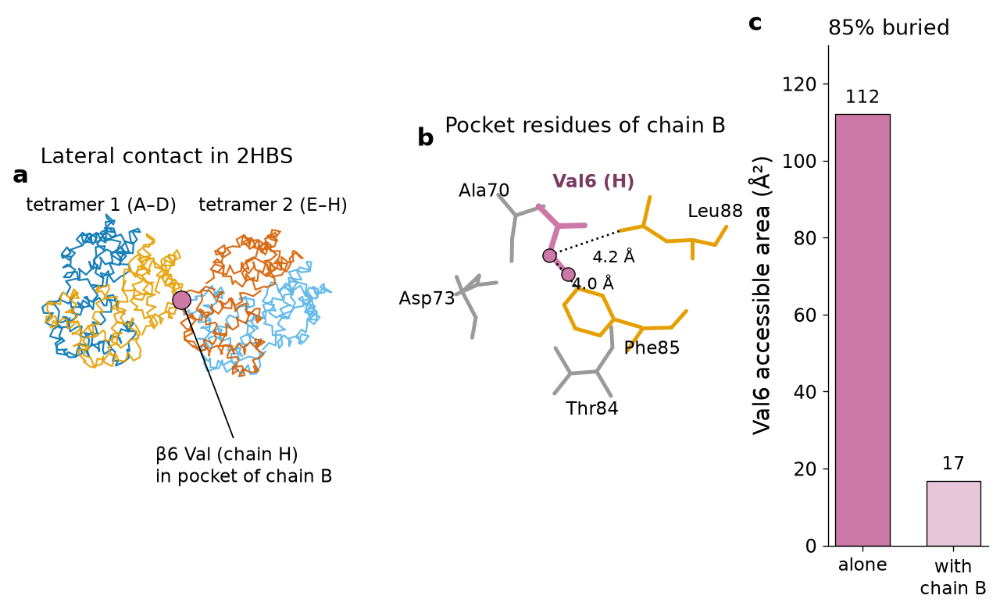
This contact is necessary but not sufficient for disease. Polymerisation occurs only in the deoxy (T) quaternary state, because in the oxy (R) state the pocket on the acceptor β chain is not presented in a compatible geometry; the delay time before polymerisation depends extremely steeply on HbS concentration; and fetal haemoglobin (HbF), whose γ chains lack the acceptor features, inhibits polymerisation. These facts explain the clinical observations reviewed by Eaton[98]: dehydrated, deoxygenated red cells sickle, and patients with persistently high HbF are protected.
What prediction can and cannot tell us
Running case 2: predictions for β-globin
- Secondary structure (Section 5.2). β-globin is entirely α-helical (117 of 146 residues in helical DSSP classes in 2HHB). Our GOR-type predictor reaches Q3 = 0.445 on it and our Chou–Fasman predictor only 0.281, because the Val- and Leu-rich amphipathic globin helices are misread as strands.
- Tertiary structure (Section 5.3). The AlphaFold model AF-P68871-F1 has mean pLDDT 97.2 and differs from 2HHB chain B by 0.49 Å Cα RMSD. A structure predictor applied to the E7V mutant sequence would return essentially the same fold, which is correct: the mutation does not change the fold.
- Variant-effect prediction. AlphaMissense classifies E7V as "likely benign" (score 0.223). The pathogenic mechanism is a new intermolecular contact in a specific quaternary state, which is outside what a single-chain predictor models. Structural bioinformatics explains HbS only when the right structures are analysed: the deoxy state, the crystal lattice, and two tetramers rather than one chain.
A structure-based therapy and its withdrawal: voxelotor
If polymerisation requires the T state, a molecule that shifts haemoglobin towards the R (high-oxygen-affinity) state should inhibit it. Voxelotor (GBT440) was designed with this goal by structure-guided optimisation of aromatic aldehydes[99]. Its aldehyde group forms a reversible Schiff base (imine) with the free amino group of the N-terminal valine of an α chain. The crystal structure 5E83 shows this directly: the drug, deposited as chemical component 5L7 (in which the former aldehyde carbon C7 appears covalently attached), is linked to the N atom of α Val1 by a 1.32 Å bond recorded in a LINK record. It binds in the central cleft between the two α-chain N-termini, in two alternative orientations (alternate locations A and B, linked respectively to Val1 of chain A and of chain C), so that one molecule binds per tetramer. Within 4 Å of the drug we find residues Pro77, Ala130, Ser131, Thr134 and Val135 of one α chain and Val1, Ser131, Thr134 and Ser138 of the other. By stabilising the oxygenated R state, voxelotor increased haemoglobin oxygen affinity, reduced sickling and prolonged red-cell survival in a mouse model[97].
In the phase 3 HOPE trial voxelotor raised haemoglobin concentration in patients with sickle-cell disease[100], and in 2019 it received accelerated approval from the US Food and Drug Administration on the basis of this surrogate end point. On 25 September 2024, however, Pfizer, which had acquired the developer, voluntarily withdrew voxelotor (Oxbryta) from all markets and stopped all clinical studies, stating that the totality of clinical data indicated that its benefit no longer outweighed the risk, with an imbalance in vaso-occlusive crises and fatal events[101]. The case is a sobering example for bioengineers: a mechanism that is perfectly rational at the structural level, a convincing crystal structure and an improved laboratory surrogate do not guarantee clinical benefit; increasing oxygen affinity may also reduce oxygen delivery to tissues.
Clinical connection
Current disease-modifying options for sickle-cell disease include hydroxyurea (which raises HbF), chronic transfusion, the anti-P-selectin antibody crizanlizumab, haematopoietic stem-cell transplantation, and gene therapies that either add an anti-sickling β-globin gene or reactivate HbF by editing the BCL11A erythroid enhancer. Treatment decisions belong to specialised haematology teams; this unit uses the disease to illustrate structural principles only.
Bridge
Unit 2 detected the HbS variant by sequencing; Unit 3 retrieved the HBB records; Units 4A and 4B aligned globins and built their phylogeny. Here the same protein has been seen in three dimensions. The structural reasoning used for voxelotor (target state, binding site, covalent mechanism) is developed for drug design in general in 04 Computer-Aided Drug Design.
Practical workshopTaller: from a PDB entry to a predicted structure and a binding site (120 min)
The workshop is designed for a university computer room with a web browser and a Google account (for Colab). Work in pairs. All expected values were obtained while preparing this unit; small differences can arise if databases are updated.
Part A. Experimental structures (35 min)
- Explore the entry. Open rcsb.org/structure/2HHB and rcsb.org/structure/2HBS. For each, record method, resolution, Rwork, Rfree (if any), number of chains in the asymmetric unit and deposition year. Expected: 2HHB X-ray 1.74 Å, R 0.160, no Rfree, 4 chains; 2HBS X-ray 2.05 Å, R 0.165, Rfree 0.215, 8 chains.
- Read the validation report of 2HBS and write down the clashscore and the percentage of Ramachandran outliers, with their percentile ranks. Discuss in one sentence whether the model is suitable for analysing the β6 contact.
- Download 2HHB.pdb and 2HHB.cif. Open both in a text editor. Find the ATOM record of the Cα of β Glu6 in the PDB file and the same atom in the
_atom_sitetable of the mmCIF file; identify every field in both. Expected: serial 1111, coordinates 27.149, −10.600, 33.493, B-factor 39.29. - Colab. Run the Biopython programs of Sections 5.1.9 and the Foundations section (parsing and φ/ψ). Extend the φ/ψ program to all four chains and draw a Ramachandran plot with matplotlib. Expected: 566 points; 12 with φ > 0, of which 8 are glycines.
- Contact map. Compute the Cα–Cα distance matrix of chain B with NumPy and plot
dist < 8withplt.imshow. Identify the diagonal band of helix A (residues 5–15). Expected: 387 contacts with |i − j| ≥ 3.
Part B. Secondary structure of protein and RNA (35 min)
- PSIPRED. Submit the sequence of human β-globin (UniProt P68871) to the PSIPRED server (bioinf.cs.ucl.ac.uk/psipred) and compare its prediction with the DSSP string of Section 5.2.1 using the Q3 program. Is it closer to the observed structure than the GOR result (Q3 = 0.445)?
- RNAfold. Fold the yeast tRNAPhe sequence on the RNAfold web server and in Colab with the ViennaRNA module (Section 5.2.10). Expected: MFE −22.40 kcal mol−1, cloverleaf dot-bracket identical to the one given in Section 5.2.7, probability of the MFE structure 0.061.
- Nussinov. Add a traceback to the Nussinov program of Section 5.2.8 and run it on the full tRNA. Count how many of the 21 cloverleaf pairs it recovers. Expected: 28 pairs, 5 native (with hmin = 3; ties in the traceback may give a slightly different but equally optimal structure).
- Rfam. Open the Rfam page of family RF00005, download the seed alignment in Stockholm format and locate the
#=GC SS_consline. Find one stem in which compensatory changes (for example G–C in some sequences and A–U in others) are visible.
Part C. Prediction and comparison (35 min)
- AlphaFold DB. Open alphafold.ebi.ac.uk/entry/P68871. Record the mean pLDDT and look at the PAE plot. Download the PDB file.
- Superposition. Run the Kabsch program of Section 5.3.10. Expected: 146 pairs, RMSD 0.487 Å. Then superpose with ChimeraX (
matchmaker) or PyMOL (align) and compare the reported RMSD (these programs may iteratively exclude outlier pairs, giving slightly smaller values). - SWISS-MODEL. Build a homology model of human myoglobin (P02144) as in Section 5.3.3 and compare it with 1A6M; record template identity, QMEAN and Cα RMSD.
Part D. The sickle contact and the drug site (15 min)
- In Mol* open 2HBS, select chain H residue 6 and display residues within 5 Å. Which chain and residues form the pocket? Expected: chain B, Ala70, Asp73, Thr84, Phe85, Leu88.
- Open 5E83 and locate the ligand 5L7. Measure the bond between its C7 atom and the N atom of Val1 of chain A. Expected: about 1.3 Å (covalent imine).
Deliverable
A two-page report (PDF) containing: (1) a table with the quality indicators of 2HHB, 2HBS and 1A3N; (2) your Ramachandran plot and contact map with one-paragraph interpretations; (3) the PSIPRED, GOR and DSSP strings for β-globin with Q3 values; (4) the RNAfold and Nussinov structures of tRNAPhe with the number of native pairs; (5) the RMSD between the AlphaFold model and 2HHB chain B; (6) a figure of the Val6 contact in 2HBS made with ChimeraX or PyMOL and a 150-word explanation of why the mutation causes polymerisation only in the deoxy state.
Self-assessmentQuestions with worked answers
Try each question before opening the answer. Questions marked (N) are numerical; (A) applied or interpretive.
1. Name the four levels of protein structure and give, for haemoglobin, one example of a feature at each level.
Primary: the amino-acid sequence (β chain begins VHLTPEEKS…). Secondary: local hydrogen-bonded conformations (helix A, residues 5–15 of the β chain by DSSP). Tertiary: the full fold of one chain (the eight-helix globin fold enclosing the haem). Quaternary: the arrangement of chains (the α2β2 tetramer). Sickle-cell disease adds an inter-tetramer contact, a level beyond the quaternary structure of the isolated molecule.
2. Why does a residue have only two free backbone dihedral angles, and why is ω close to 180°?
Bond lengths and bond angles are nearly fixed, so conformation is set by torsions. The C–N peptide bond has partial double-bond character (resonance with the carbonyl), which makes the peptide group planar; rotation about it (ω) is restricted to about 180° (trans) or, rarely, 0° (cis). The remaining freedom is rotation about N–Cα (φ) and Cα–C (ψ). In 2HHB all 570 peptide bonds are trans (mean |ω| 176.2°).
3. (N) A protein segment of 20 residues forms an ideal α-helix. How long is it along the helix axis, and how many turns does it make?
The rise per residue is 1.5 Å and there are 3.6 residues per turn. Length ≈ 20 × 1.5 = 30 Å; turns ≈ 20 / 3.6 ≈ 5.6. The same 20 residues in an extended strand would span about 20 × 3.3–3.5 ≈ 66–70 Å.
4. (A) In a Ramachandran plot of a newly deposited structure, five non-glycine residues lie at φ ≈ +60°, ψ ≈ −120°. What should you do?
That region is disallowed for non-glycine residues because of steric clashes involving Cβ. The residues are probable model errors (wrong backbone trace, peptide flips) unless the electron density clearly supports them, which is rare. Inspect the density and the validation report (real-space fit), and treat the region with caution; in a well-refined structure fewer than 0.5 % of residues should be Ramachandran outliers.
5. Explain the phase problem in X-ray crystallography and two ways of solving it.
The electron density is the Fourier synthesis of structure factors F(hkl) = |F| exp(iα). Detectors measure intensities I ∝ |F|², so amplitudes are known but phases α are lost, and the density cannot be computed directly. Molecular replacement takes phases from a known similar structure (or a predicted model) placed correctly in the unit cell; experimental phasing uses heavy-atom derivatives or anomalous scattering (for example selenomethionine) to determine the phases from intensity differences.
6. (A) Two crystal structures of the same protein have Rwork/Rfree of 0.18/0.21 and 0.15/0.29 at 2.0 Å. Which is more trustworthy and why?
The first. Rfree is computed on reflections excluded from refinement and measures predictive agreement; a gap of 0.14 between Rwork and Rfree in the second structure indicates over-fitting (too many parameters or insufficient restraints), so its lower Rwork is misleading. At 2.0 Å an Rfree near 0.20–0.25 is expected.
7. (N) An atom has a B-factor of 50 Ų. What is its root-mean-square displacement?
B = 8π²⟨u²⟩, so ⟨u²⟩ = 50 / (8 × 9.87) = 0.633 Ų and the RMS displacement is √0.633 ≈ 0.80 Å. This is the order of the B-factors at the N-terminus of the β chain in 2HHB (50.2 Ų for Val1 Cα), consistent with a mobile terminus.
8. Why do NMR entries contain many models, and what does the spread among them mean?
NMR provides restraints (upper distance bounds from NOEs, dihedral ranges), not a unique structure; many conformations satisfy them equally well, so an ensemble of low-energy solutions is deposited. Large spread indicates either few restraints (low precision) or genuine flexibility; additional data (relaxation measurements) are needed to distinguish the two.
9. What changed around 2013–2014 in cryo-EM, and how is it visible in the PDB statistics?
Direct electron detectors and new image-processing methods (motion correction, maximum-likelihood classification) allowed near-atomic maps (the "resolution revolution"). In the RCSB statistics retrieved for this unit, only 0.5 % of EM entries released in 2014 were better than 3.0 Å, compared with 40.9 % in 2026, and the annual number of EM entries rose from 192 (2014) to 7,233 (2025).
10. (A) A colleague's script splits ATOM lines on white space and fails on some files. Explain why and propose a correct approach.
The PDB format is defined by fixed columns, not separators. Wide negative numbers (for example −100.123 in an 8-character field), four-character residue numbers, insertion codes and atom names that fill columns 13–16 can merge fields or shift the token count. Use column slicing (x = line[30:38], y = line[38:46], z = line[46:54]) or a parser (Bio.PDB, gemmi), preferably reading PDBx/mmCIF.
11. Give three reasons why the wwPDB moved to PDBx/mmCIF.
(i) The legacy format cannot represent more than 99,999 atoms, multi-character chain identifiers or more than 9,999 residues per chain, which large assemblies exceed. (ii) Three-character chemical-component codes are exhausted and four-character PDB identifiers will be exhausted; five-character ligand codes and the extended pdb_0000xxxx identifiers fit only in mmCIF. (iii) mmCIF is dictionary-based and extensible, so it can store rich experimental metadata, new methods and integrative models in a machine-validated way.
12. (N) In a test set of 200 residues, a predictor gets 70 of 80 helix residues, 30 of 50 strand residues and 50 of 70 coil residues right. Compute Q3 and compare it with the coil-only baseline.
Q3 = (70 + 30 + 50) / 200 = 150 / 200 = 0.75. Predicting everything as the most frequent class (helix, 80 residues) gives 80 / 200 = 0.40; the predictor adds 35 percentage points over that baseline. Per-state accuracies are 0.875 (H), 0.60 (E) and 0.714 (C).
13. What is the main conceptual difference between Chou–Fasman and GOR, and how big was the difference in our experiment?
Chou–Fasman uses the propensity of each residue for its own state, combined by heuristic nucleation and extension rules. GOR uses the information that each residue in a 17-residue window carries about the state of the central residue, summed under an independence assumption (a naive-Bayes classifier). On 57 independent test chains, our implementations gave Q3 = 0.497 and 0.577, respectively, against a coil-only baseline of 0.390.
14. Why did PHD and PSIPRED exceed 70 % accuracy when single-sequence methods could not?
They used evolutionary information: the profile (PHD) or PSI-BLAST PSSM (PSIPRED) of a multiple alignment of homologues, which shows which residues are tolerated at each position and therefore reveals patterns such as amphipathic periodicity that a single sequence hides. Neural networks then learned non-additive relations within the window. PSIPRED reached about 76.5 %.
15. (N) Fill the Nussinov matrix for the sequence GGAAAUCC with hmin = 3 and give the optimal structure.
Positions 1–8: G G A A A U C C. Spans ≤ 3 give 0. Span 4: (1,5) G–A no; (2,6) G·U yes → N(2,6) = 1; (3,7) A–C no; (4,8) A–C no. Span 5: N(1,6) = max(N(2,6) = 1, G1·U6 with N(2,5)=0 → 1) = 1; N(2,7) = max(N(3,7)=0, N(2,6)=1, G2–C7 + N(3,6)=0 → 1) = 1; N(3,8) = 0. Span 6: N(1,7) = max(N(2,7)=1, G1–C7 + N(2,6)=1 → 2) = 2; N(2,8) = max(N(2,7)=1, G2–C8 + N(3,7)=0 → 1) = 1. Span 7: N(1,8) = max(N(2,8)=1, N(1,7)=2, G1–C8 + N(2,7)=1 → 2) = 2. Optimal: 2 pairs, for example ((...)). with G1–C7 and G2·U6, or equivalently G1–C8 with G2–C7.
16. Why is the minimum-free-energy model more realistic than base-pair maximisation? Illustrate with tRNAPhe.
Stability comes mainly from stacking between adjacent base pairs and is reduced by loop entropy; maximising the number of pairs ignores both and favours many isolated pairs and small loops. For tRNAPhe Nussinov returns 28 pairs with only 5 native, whereas the ViennaRNA MFE structure (−22.4 kcal mol−1) reproduces all 21 cloverleaf pairs and no others.
17. (A) The MFE structure of an RNA has probability 0.06 in the Boltzmann ensemble. Does this mean the prediction is wrong?
No. Many structures share the ensemble, often differing in small details, so even the single most likely structure can have low probability. One should examine base-pair probabilities: pairs with P > 0.9 (such as the tRNA acceptor stem, mean 0.91) are reliable, whereas stems with low probabilities (the D stem, 0.20) are uncertain in the model, here because tertiary contacts, ions and modifications that stabilise them in vivo are not included.
18. How does covariation identify base pairs, and why do invariant positions give no signal?
Paired positions must remain complementary, so a change at one is accompanied by a compensating change at the other; their joint distribution in an alignment departs from independence, measured by mutual information. A position that never varies has zero entropy and therefore zero mutual information with any other column, however important it is. In the Rfam tRNA seed, 19 of the 20 highest-MI column pairs were consensus base pairs.
19. State Anfinsen's thermodynamic hypothesis and Levinthal's paradox, and explain how each influenced prediction methods.
Anfinsen: the native structure is the minimum of free energy and is determined by the sequence, so prediction from sequence is possible in principle and can be framed as optimisation of an energy. Levinthal: the conformational space is astronomically large (3100 ≈ 5 × 1047 for 100 residues with three states each), so a random search is impossible; prediction methods must restrict the search with templates, fragments or learned distance constraints.
20. (A) A target protein has a template with 22 % identity over 180 residues. What approach and what precautions do you recommend?
The pair lies near the twilight zone (the Rost threshold for L = 180 is about 23 %), so homology must be confirmed by sensitive methods (HMM–HMM comparison with HHpred, structure-aware alignments) and the alignment checked carefully against predicted secondary structure. Today the first choice is to run AlphaFold or ESMFold and inspect pLDDT and PAE, using the template model as a cross-check; regions with low confidence or disagreement between methods, especially loops and insertions, should not be over-interpreted.
21. Describe the three main stages of AlphaFold2.
(1) Inputs: a multiple sequence alignment and optional templates, embedded as an MSA representation and a pair representation. (2) The Evoformer: 48 blocks of attention along MSA rows and columns and triangle updates of the pair representation, which extract co-evolution and enforce geometric consistency. (3) The structure module: invariant point attention moves residue frames from the origin into a 3D structure and predicts side-chain torsions; outputs are recycled three times and relaxed. The network also predicts its own errors (pLDDT, PAE).
22. (N) For Lref = 146, compute d0 of the TM-score, and the contribution to the TM-score of a residue pair at 4.5 Å.
d0 = 1.24 (146 − 15)1/3 − 1.8 = 1.24 × 5.079 − 1.8 = 4.50 Å. A pair at d = 4.5 Å contributes 1/[1 + (4.5/4.5)²] = 0.5, divided by Lref. A pair at 0.5 Å contributes 1/(1 + 0.0123) ≈ 0.988. This length-dependent scale is why TM-scores are comparable across protein sizes.
23. (A) An AlphaFold model of a two-domain protein has pLDDT > 90 in both domains, but the PAE between domains is about 25 Å. How do you interpret and use the model?
Each domain is probably accurate, but their relative orientation is not determined: the inter-domain arrangement may be flexible or simply unknown to the network. Use each domain separately (for docking into one domain, for example) and do not interpret inter-domain distances or contacts; experimental data (SAXS, cross-linking, cryo-EM) or complex prediction with partners may resolve the arrangement.
24. In the 1HSG re-docking experiment, runs from conformer A failed even with exhaustiveness 128. Was the problem the search or the scoring function? How do you know?
The search. When the native basin was reached (runs 1 and 2), its poses scored about −11.9 kcal mol−1, about 2 kcal mol−1 better than the best poses of the failing runs (−9.9 kcal mol−1), so the scoring function would have ranked the correct pose first had it been generated. The failing runs never generated it because Vina keeps ring geometry fixed and the input conformer A differed from the bound conformation by 4.20 Å; more sampling of the same degrees of freedom could not compensate.
25. (N) A virtual screen of 50,000 compounds contains 100 known actives. The top 500 compounds contain 25 actives. Compute EF1%.
The top 1 % is 500 compounds. Hit rate in the top 1 % = 25/500 = 0.05; overall hit rate = 100/50,000 = 0.002. EF1% = 0.05/0.002 = 25: the screen finds actives 25 times more often than random selection in its top 1 %.
26. (A) Why does the sickle-cell mutation not appear harmful to a single-chain structure predictor or to AlphaMissense, and what structural analysis reveals its effect?
Glu6Val is a surface substitution that does not alter the fold (β chains of 2HHB and 2HBS superpose at 0.36 Å) and does not destabilise the monomer, so single-chain predictors show no change and AlphaMissense scores it as likely benign (0.223). Its effect is a new intermolecular hydrophobic contact: in the deoxy-HbS crystal (2HBS) Val6 of one tetramer buries 85 % of its surface in the Ala70/Asp73/Thr84/Phe85/Leu88 pocket of a β chain of another tetramer. Revealing it requires analysing the correct quaternary state and the contact between two tetramers.
AppendixGlossary
- AlphaFold DB
- Database of AlphaFold-predicted structures for more than 214 million protein sequences, maintained by EMBL-EBI with Google DeepMind; entries are named AF-<UniProt accession>-F1.
- Asymmetric unit
- The smallest part of a crystal from which the whole unit cell can be generated by the crystal's symmetry operations; the content of a deposited X-ray entry.
- B-factor (atomic displacement parameter)
- Parameter describing the spread of an atom's electron density; B = 8π²⟨u²⟩. In AlphaFold files the same column stores pLDDT.
- Base-pair probability
- Probability that two nucleotides are paired, summed over the Boltzmann ensemble of secondary structures (McCaskill algorithm).
- Biological assembly
- The functional oligomer of a macromolecule, which may differ from the asymmetric unit of the crystal.
- CASP
- Critical Assessment of protein Structure Prediction: biennial blind experiment, started in 1994, that evaluates prediction methods on unpublished structures.
- CATH
- Hierarchical classification of protein domains into Class, Architecture, Topology and Homologous superfamily.
- Chemical shift
- Small, environment-dependent variation of the resonance frequency of a nucleus in NMR, used to assign signals and to infer local structure.
- Contact map
- Binary or distance matrix indicating which residue pairs are close in space (for example Cα–Cα < 8 Å).
- Covariance model
- Probabilistic model of an RNA family that scores sequence conservation and base-pair covariation; used by Rfam and Infernal.
- Covariation
- Correlated substitution of two positions in an alignment, such as compensatory changes that preserve a base pair; measured by mutual information.
- Cryo-EM (single particle)
- Electron microscopy of vitrified samples in which many 2D particle images are combined into a 3D map.
- Dihedral (torsion) angle
- Angle between the planes defined by atoms A–B–C and B–C–D; φ, ψ and ω describe the protein backbone.
- Docking
- Computational prediction of the binding pose of a ligand on a receptor and an approximate score of its affinity.
- Dot-bracket notation
- String representation of a nested RNA secondary structure: dots for unpaired nucleotides, matching brackets for paired ones.
- DSSP
- Program that assigns eight secondary-structure classes (H, G, I, E, B, T, S, coil) from hydrogen-bond patterns in coordinates.
- Electron density
- Three-dimensional distribution of electrons in the unit cell computed by Fourier synthesis in X-ray crystallography; the model is built into it.
- Enrichment factor
- Ratio between the hit rate in the top fraction of a ranked screening list and the hit rate expected at random.
- Evoformer
- The trunk of AlphaFold2, which jointly updates an MSA representation and a pair representation with attention and triangle operations.
- Fragment assembly
- Template-free prediction strategy (Rosetta) that builds structures by Monte Carlo insertion of backbone fragments taken from known structures.
- Free R-factor (Rfree)
- R-factor computed on reflections excluded from refinement; a cross-validation measure of model quality.
- GDT_TS
- Global distance test total score: average percentage of Cα atoms within 1, 2, 4 and 8 Å after optimal superposition.
- GOR method
- Information-theoretic secondary-structure predictor that sums the information carried by residues in a 17-residue window.
- Homology (comparative) modelling
- Building a model of a target protein on the experimental structure of a homologous template.
- Kabsch algorithm
- Method that finds the rotation minimising the RMSD between two sets of corresponding points, using the singular value decomposition of their covariance matrix.
- Lamarckian genetic algorithm
- Genetic-algorithm search (AutoDock 4) in which locally optimised poses are written back into the population.
- lDDT
- Local distance difference test: superposition-free score of how well inter-atomic distances of the reference are preserved in a model.
- Minimum free energy (MFE) structure
- The RNA secondary structure of lowest free energy under a nearest-neighbour energy model, found by the Zuker algorithm.
- Mol*
- Web-based molecular viewer of RCSB PDB and PDBe, able to display very large structures and experimental maps.
- Molecular replacement
- Solution of the crystallographic phase problem using a known similar structure or a predicted model.
- Nearest-neighbour model
- Energy model in which the free energy of an RNA structure is the sum of terms for stacked pairs and loops, with parameters from melting experiments.
- NOE (nuclear Overhauser effect)
- Transfer of magnetisation between nearby protons (below ~5–6 Å) that provides distance restraints in NMR.
- Nussinov algorithm
- Dynamic-programming algorithm that finds the nested RNA secondary structure with the maximum number of base pairs.
- PAE (predicted aligned error)
- AlphaFold matrix of expected position errors of residue y after superposition on residue x; indicates confidence in relative positions of domains.
- PDBx/mmCIF
- Dictionary-based, extensible file format of the PDB archive, which replaced the frozen legacy PDB format.
- Phase problem
- Loss of structure-factor phases in diffraction experiments, which measure only intensities.
- pLDDT
- AlphaFold's per-residue predicted lDDT-Cα (0–100); >90 very high, 70–90 confident, 50–70 low, <50 very low confidence.
- Pose
- One specific position, orientation and conformation of a ligand relative to a receptor.
- Propensity
- Ratio P(state | amino acid) / P(state) expressing how much an amino acid is enriched in a conformational state.
- Pseudoknot
- RNA structure with crossing base pairs (i < k < j < l), not representable by simple brackets or by standard dynamic programming.
- Q3
- Fraction of residues whose three-state secondary structure (H, E, C) is predicted correctly.
- Ramachandran plot
- Plot of ψ against φ showing the sterically allowed backbone conformations of residues.
- Re-docking
- Validation in which the ligand of a crystal complex is removed and docked back; success if RMSD < 2 Å.
- Resolution
- Smallest lattice spacing (X-ray) or spatial frequency (cryo-EM, by FSC 0.143) at which the data contain reliable information.
- RMSD
- Root-mean-square deviation between corresponding atoms of two structures after optimal superposition.
- Scoring function
- Fast approximate function used by docking programs to rank poses by estimated binding free energy.
- Solvent-accessible surface area (SASA)
- Surface traced by the centre of a probe sphere (1.4 Å) rolled over the van der Waals surface of a molecule.
- Template
- Experimental structure of a homologue used to model a target protein.
- Threading (fold recognition)
- Prediction by evaluating the compatibility of a sequence with each fold of a library using statistical potentials.
- TM-score
- Length-normalised structural similarity score in (0, 1]; above 0.5 indicates the same fold, about 0.17 random similarity.
- Twilight zone
- Range of sequence identity (about 20–30 % for typical lengths) in which homology can no longer be inferred reliably from identity alone.
- Virtual screening
- Computational ranking of a compound library against a target to select molecules for experimental testing.
- wwPDB
- Worldwide Protein Data Bank: the organisation (RCSB PDB, PDBe, PDBj, BMRB, EMDB) that manages the single global PDB archive.
AppendixReferences and further reading
Primary literature
Every DOI below was checked against the Crossref API (api.crossref.org) on 18 October 2026; the two entries without a DOI were verified at the URL given.
- Fermi G, Perutz MF, Shaanan B et al. (1984). The crystal structure of human deoxyhaemoglobin at 1.74 Å resolution. Journal of Molecular Biology 175, 159–174. doi:10.1016/0022-2836(84)90472-8
- Kendrew JC, Bodo G, Dintzis HM et al. (1958). A Three-Dimensional Model of the Myoglobin Molecule Obtained by X-Ray Analysis. Nature 181, 662–666. doi:10.1038/181662a0
- Perutz MF, Rossmann MG, Cullis AF et al. (1960). Structure of Hæmoglobin: A Three-Dimensional Fourier Synthesis at 5.5-Å. Resolution, Obtained by X-Ray Analysis. Nature 185, 416–422. doi:10.1038/185416a0
- Pauling L, Itano HA, Singer SJ et al. (1949). Sickle Cell Anemia, a Molecular Disease. Science 110, 543–548. doi:10.1126/science.110.2865.543
- Ingram VM (1957). Gene Mutations in Human Hæmoglobin: the Chemical Difference Between Normal and Sickle Cell Hæmoglobin. Nature 180, 326–328. doi:10.1038/180326a0
- Pauling L, Corey RB, Branson HR (1951). The structure of proteins: Two hydrogen-bonded helical configurations of the polypeptide chain. Proceedings of the National Academy of Sciences 37, 205–211. doi:10.1073/pnas.37.4.205
- Ramachandran GN, Ramakrishnan C, Sasisekharan V (1963). Stereochemistry of polypeptide chain configurations. Journal of Molecular Biology 7, 95–99. doi:10.1016/S0022-2836(63)80023-6
- Kabsch W, Sander C (1983). Dictionary of protein secondary structure: Pattern recognition of hydrogen‐bonded and geometrical features. Biopolymers 22, 2577–2637. doi:10.1002/bip.360221211
- Shrake A, Rupley JA (1973). Environment and exposure to solvent of protein atoms. Lysozyme and insulin. Journal of Molecular Biology 79, 351–371. doi:10.1016/0022-2836(73)90011-9
- Tien MZ, Meyer AG, Sydykova DK et al. (2013). Maximum Allowed Solvent Accessibilites of Residues in Proteins. PLoS ONE 8, e80635. doi:10.1371/journal.pone.0080635
- Brünger AT (1992). Free R value: a novel statistical quantity for assessing the accuracy of crystal structures. Nature 355, 472–475. doi:10.1038/355472a0
- Wishner BC, Ward KB, Lattman EE et al. (1975). Crystal structure of sickle-cell deoxyhemoglobin at 5 Å resolution. Journal of Molecular Biology 98, 179–194. doi:10.1016/S0022-2836(75)80108-2
- Harrington DJ, Adachi K, Royer WE (1997). The high resolution crystal structure of deoxyhemoglobin S. Journal of Molecular Biology 272, 398–407. doi:10.1006/jmbi.1997.1253
- Wüthrich K (2003). NMR Studies of Structure and Function of Biological Macromolecules (Nobel Lecture). Angewandte Chemie International Edition 42, 3340–3363. doi:10.1002/anie.200300595
- Hoch JC, Baskaran K, Burr H et al. (2023). Biological Magnetic Resonance Data Bank. Nucleic Acids Research 51, D368–D376. doi:10.1093/nar/gkac1050
- wwPDB Consortium (2024). EMDB—the Electron Microscopy Data Bank. Nucleic Acids Research 52, D456–D465. doi:10.1093/nar/gkad1019
- Kühlbrandt W (2014). The Resolution Revolution. Science 343, 1443–1444. doi:10.1126/science.1251652
- Burley SK, Kurisu G, Markley JL et al. (2017). PDB-Dev: a Prototype System for Depositing Integrative/Hybrid Structural Models. Structure 25, 1317–1318. doi:10.1016/j.str.2017.08.001
- Read RJ, Adams PD, Arendall WB et al. (2011). A New Generation of Crystallographic Validation Tools for the Protein Data Bank. Structure 19, 1395–1412. doi:10.1016/j.str.2011.08.006
- Chen VB, Arendall WB, Headd JJ et al. (2010). MolProbity : all-atom structure validation for macromolecular crystallography. Acta Crystallographica Section D Biological Crystallography 66, 12–21. doi:10.1107/S0907444909042073
- Westbrook JD, Young JY, Shao C et al. (2022). PDBx/mmCIF Ecosystem: Foundational Semantic Tools for Structural Biology. Journal of Molecular Biology 434, 167599. doi:10.1016/j.jmb.2022.167599
- Adams PD, Afonine PV, Baskaran K et al. (2019). Announcing mandatory submission of PDBx/mmCIF format files for crystallographic depositions to the Protein Data Bank (PDB). Acta Crystallographica Section D Structural Biology 75, 451–454. doi:10.1107/S2059798319004522
- Berman HM (2000). The Protein Data Bank. Nucleic Acids Research 28, 235–242. doi:10.1093/nar/28.1.235
- Berman H, Henrick K, Nakamura H (2003). Announcing the worldwide Protein Data Bank. Nature Structural & Molecular Biology 10, 980–980. doi:10.1038/nsb1203-980
- wwPDB consortium (2019). Protein Data Bank: the single global archive for 3D macromolecular structure data. Nucleic Acids Research 47, D520–D528. doi:10.1093/nar/gky949
- Burley SK, Bhikadiya C, Bi C et al. (2022). RCSB Protein Data bank: Tools for visualizing and understanding biological macromolecules in 3D. Protein Science 31, e4482. doi:10.1002/pro.4482
- Cock PJA, Antao T, Chang JT et al. (2009). Biopython: freely available Python tools for computational molecular biology and bioinformatics. Bioinformatics 25, 1422–1423. doi:10.1093/bioinformatics/btp163
- Hamelryck T, Manderick B (2003). PDB file parser and structure class implemented in Python. Bioinformatics 19, 2308–2310. doi:10.1093/bioinformatics/btg299
- Pettersen EF, Goddard TD, Huang CC et al. (2021). UCSF ChimeraX : Structure visualization for researchers, educators, and developers. Protein Science 30, 70–82. doi:10.1002/pro.3943
- Humphrey W, Dalke A, Schulten K (1996). VMD: Visual molecular dynamics. Journal of Molecular Graphics 14, 33–38. doi:10.1016/0263-7855(96)00018-5
- Sehnal D, Bittrich S, Deshpande M et al. (2021). Mol* Viewer: modern web app for 3D visualization and analysis of large biomolecular structures. Nucleic Acids Research 49, W431–W437. doi:10.1093/nar/gkab314
- Rego N, Koes D (2015). 3Dmol.js: molecular visualization with WebGL. Bioinformatics 31, 1322–1324. doi:10.1093/bioinformatics/btu829
- Sillitoe I, Bordin N, Dawson N et al. (2021). CATH: increased structural coverage of functional space. Nucleic Acids Research 49, D266–D273. doi:10.1093/nar/gkaa1079
- Andreeva A, Kulesha E, Gough J et al. (2020). The SCOP database in 2020: expanded classification of representative family and superfamily domains of known protein structures. Nucleic Acids Research 48, D376–D382. doi:10.1093/nar/gkz1064
- Cheng H, Schaeffer RD, Liao Y et al. (2014). ECOD: An Evolutionary Classification of Protein Domains. PLoS Computational Biology 10, e1003926. doi:10.1371/journal.pcbi.1003926
- Varadi M, Anyango S, Deshpande M et al. (2022). AlphaFold Protein Structure Database: massively expanding the structural coverage of protein-sequence space with high-accuracy models. Nucleic Acids Research 50, D439–D444. doi:10.1093/nar/gkab1061
- Varadi M, Bertoni D, Magana P et al. (2024). AlphaFold Protein Structure Database in 2024: providing structure coverage for over 214 million protein sequences. Nucleic Acids Research 52, D368–D375. doi:10.1093/nar/gkad1011
- Laskowski RA, Jabłońska J, Pravda L et al. (2018). PDBsum: Structural summaries of PDB entries. Protein Science 27, 129–134. doi:10.1002/pro.3289
- Yang J, Roy A, Zhang Y (2012). BioLiP: a semi-manually curated database for biologically relevant ligand–protein interactions. Nucleic Acids Research 41, D1096–D1103. doi:10.1093/nar/gks966
- Wang R, Fang X, Lu Y et al. (2004). The PDBbind Database: Collection of Binding Affinities for Protein−Ligand Complexes with Known Three-Dimensional Structures. Journal of Medicinal Chemistry 47, 2977–2980. doi:10.1021/jm030580l
- Gilson MK, Liu T, Baitaluk M et al. (2016). BindingDB in 2015: A public database for medicinal chemistry, computational chemistry and systems pharmacology. Nucleic Acids Research 44, D1045–D1053. doi:10.1093/nar/gkv1072
- Dunbar J, Krawczyk K, Leem J et al. (2014). SAbDab: the structural antibody database. Nucleic Acids Research 42, D1140–D1146. doi:10.1093/nar/gkt1043
- Berman HM, Olson WK, Beveridge DL et al. (1992). The nucleic acid database. A comprehensive relational database of three-dimensional structures of nucleic acids. Biophysical Journal 63, 751–759. doi:10.1016/S0006-3495(92)81649-1
- Cheng J, Novati G, Pan J et al. (2023). Accurate proteome-wide missense variant effect prediction with AlphaMissense. Science 381, eadg7492. doi:10.1126/science.adg7492
- Yang Y, Gao J, Wang J et al. (2018). Sixty-five years of the long march in protein secondary structure prediction: the final stretch?. Briefings in Bioinformatics 19, 482–494. doi:10.1093/bib/bbw129
- Chou PY, Fasman GD (1974). Prediction of protein conformation. Biochemistry 13, 222–245. doi:10.1021/bi00699a002
- Garnier J, Osguthorpe DJ, Robson B (1978). Analysis of the accuracy and implications of simple methods for predicting the secondary structure of globular proteins. Journal of Molecular Biology 120, 97–120. doi:10.1016/0022-2836(78)90297-8
- Rost B, Sander C (1993). Prediction of Protein Secondary Structure at Better than 70% Accuracy. Journal of Molecular Biology 232, 584–599. doi:10.1006/jmbi.1993.1413
- Jones DT (1999). Protein secondary structure prediction based on position-specific scoring matrices. Journal of Molecular Biology 292, 195–202. doi:10.1006/jmbi.1999.3091
- Høie MH, Kiehl EN, Petersen B et al. (2022). NetSurfP-3.0: accurate and fast prediction of protein structural features by protein language models and deep learning. Nucleic Acids Research 50, W510–W515. doi:10.1093/nar/gkac439
- Moffat L, Jones DT (2021). Increasing the accuracy of single sequence prediction methods using a deep semi-supervised learning framework. Bioinformatics 37, 3744–3751. doi:10.1093/bioinformatics/btab491
- Shi H, Moore PB (2000). The crystal structure of yeast phenylalanine tRNA at 1.93 Å resolution: A classic structure revisited. RNA 6, 1091–1105. doi:10.1017/S1355838200000364
- Nussinov R, Jacobson AB (1980). Fast algorithm for predicting the secondary structure of single-stranded RNA. Proceedings of the National Academy of Sciences 77, 6309–6313. doi:10.1073/pnas.77.11.6309
- Zuker M, Stiegler P (1981). Optimal computer folding of large RNA sequences using thermodynamics and auxiliary information. Nucleic Acids Research 9, 133–148. doi:10.1093/nar/9.1.133
- Turner DH, Mathews DH (2010). NNDB: the nearest neighbor parameter database for predicting stability of nucleic acid secondary structure. Nucleic Acids Research 38, D280–D282. doi:10.1093/nar/gkp892
- Lorenz R, Bernhart SH, Höner zu Siederdissen C et al. (2011). ViennaRNA Package 2.0. Algorithms for Molecular Biology 6, 26. doi:10.1186/1748-7188-6-26
- McCaskill JS (1990). The equilibrium partition function and base pair binding probabilities for RNA secondary structure. Biopolymers 29, 1105–1119. doi:10.1002/bip.360290621
- Kalvari I, Nawrocki EP, Ontiveros-Palacios N et al. (2021). Rfam 14: expanded coverage of metagenomic, viral and microRNA families. Nucleic Acids Research 49, D192–D200. doi:10.1093/nar/gkaa1047
- Eddy SR, Durbin R (1994). RNA sequence analysis using covariance models. Nucleic Acids Research 22, 2079–2088. doi:10.1093/nar/22.11.2079
- Anfinsen CB (1973). Principles that Govern the Folding of Protein Chains. Science 181, 223–230. doi:10.1126/science.181.4096.223
- Levinthal C (1968). Are there pathways for protein folding?. Journal de Chimie Physique 65, 44–45. doi:10.1051/jcp/1968650044
- Chothia C, Lesk AM (1986). The relation between the divergence of sequence and structure in proteins. The EMBO Journal 5, 823–826. doi:10.1002/j.1460-2075.1986.tb04288.x
- Rost B (1999). Twilight zone of protein sequence alignments. Protein Engineering, Design and Selection 12, 85–94. doi:10.1093/protein/12.2.85
- Šali A, Blundell TL (1993). Comparative Protein Modelling by Satisfaction of Spatial Restraints. Journal of Molecular Biology 234, 779–815. doi:10.1006/jmbi.1993.1626
- Waterhouse A, Bertoni M, Bienert S et al. (2018). SWISS-MODEL: homology modelling of protein structures and complexes. Nucleic Acids Research 46, W296–W303. doi:10.1093/nar/gky427
- Jones DT, Taylor WR, Thornton JM (1992). A new approach to protein fold recognition. Nature 358, 86–89. doi:10.1038/358086a0
- Simons KT, Kooperberg C, Huang E et al. (1997). Assembly of protein tertiary structures from fragments with similar local sequences using simulated annealing and bayesian scoring functions. Journal of Molecular Biology 268, 209–225. doi:10.1006/jmbi.1997.0959
- Moult J, Pedersen JT, Judson R et al. (1995). A large‐scale experiment to assess protein structure prediction methods. Proteins: Structure, Function, and Bioinformatics 23. doi:10.1002/prot.340230303
- Senior AW, Evans R, Jumper J et al. (2020). Improved protein structure prediction using potentials from deep learning. Nature 577, 706–710. doi:10.1038/s41586-019-1923-7
- Kryshtafovych A, Schwede T, Topf M et al. (2021). Critical assessment of methods of protein structure prediction (CASP)—Round XIV. Proteins: Structure, Function, and Bioinformatics 89, 1607–1617. doi:10.1002/prot.26237
- Jumper J, Evans R, Pritzel A et al. (2021). Highly accurate protein structure prediction with AlphaFold. Nature 596, 583–589. doi:10.1038/s41586-021-03819-2
- Baek M, DiMaio F, Anishchenko I et al. (2021). Accurate prediction of protein structures and interactions using a three-track neural network. Science 373, 871–876. doi:10.1126/science.abj8754
- Lin Z, Akin H, Rao R et al. (2023). Evolutionary-scale prediction of atomic-level protein structure with a language model. Science 379, 1123–1130. doi:10.1126/science.ade2574
- Abramson J, Adler J, Dunger J et al. (2024). Accurate structure prediction of biomolecular interactions with AlphaFold 3. Nature 630, 493–500. doi:10.1038/s41586-024-07487-w
- The Royal Swedish Academy of Sciences (2024). Press release: The Nobel Prize in Chemistry 2024 (9 October 2024). https://www.nobelprize.org/prizes/chemistry/2024/press-release/
- Kabsch W (1976). A solution for the best rotation to relate two sets of vectors. Acta Crystallographica Section A 32, 922–923. doi:10.1107/S0567739476001873
- Zemla A (2003). LGA: a method for finding 3D similarities in protein structures. Nucleic Acids Research 31, 3370–3374. doi:10.1093/nar/gkg571
- Zhang Y, Skolnick J (2004). Scoring function for automated assessment of protein structure template quality. Proteins: Structure, Function, and Bioinformatics 57, 702–710. doi:10.1002/prot.20264
- Mariani V, Biasini M, Barbato A et al. (2013). lDDT: a local superposition-free score for comparing protein structures and models using distance difference tests. Bioinformatics 29, 2722–2728. doi:10.1093/bioinformatics/btt473
- Buttenschoen M, Morris GM, Deane CM (2024). PoseBusters: AI-based docking methods fail to generate physically valid poses or generalise to novel sequences. Chemical Science 15, 3130–3139. doi:10.1039/D3SC04185A
- Kuntz ID, Blaney JM, Oatley SJ et al. (1982). A geometric approach to macromolecule-ligand interactions. Journal of Molecular Biology 161, 269–288. doi:10.1016/0022-2836(82)90153-X
- Morris GM, Goodsell DS, Halliday RS et al. (1998). Automated docking using a Lamarckian genetic algorithm and an empirical binding free energy function. Journal of Computational Chemistry 19, 1639–1662. doi:10.1002/(SICI)1096-987X(19981115)19:14<1639::AID-JCC10>3.0.CO;2-B
- Trott O, Olson AJ (2010). AutoDock Vina: Improving the speed and accuracy of docking with a new scoring function, efficient optimization, and multithreading. Journal of Computational Chemistry 31, 455–461. doi:10.1002/jcc.21334
- Böhm HJ (1994). The development of a simple empirical scoring function to estimate the binding constant for a protein-ligand complex of known three-dimensional structure. Journal of Computer-Aided Molecular Design 8, 243–256. doi:10.1007/BF00126743
- Muegge I, Martin YC (1999). A General and Fast Scoring Function for Protein−Ligand Interactions: A Simplified Potential Approach. Journal of Medicinal Chemistry 42, 791–804. doi:10.1021/jm980536j
- Kozakov D, Hall DR, Xia B et al. (2017). The ClusPro web server for protein–protein docking. Nature Protocols 12, 255–278. doi:10.1038/nprot.2016.169
- Dominguez C, Boelens R, Bonvin AMJJ (2003). HADDOCK: A Protein−Protein Docking Approach Based on Biochemical or Biophysical Information. Journal of the American Chemical Society 125, 1731–1737. doi:10.1021/ja026939x
- Lyu J, Wang S, Balius TE et al. (2019). Ultra-large library docking for discovering new chemotypes. Nature 566, 224–229. doi:10.1038/s41586-019-0917-9
- Mysinger MM, Carchia M, Irwin JJ et al. (2012). Directory of Useful Decoys, Enhanced (DUD-E): Better Ligands and Decoys for Better Benchmarking. Journal of Medicinal Chemistry 55, 6582–6594. doi:10.1021/jm300687e
- Truchon JF, Bayly CI (2007). Evaluating Virtual Screening Methods: Good and Bad Metrics for the “Early Recognition” Problem. Journal of Chemical Information and Modeling 47, 488–508. doi:10.1021/ci600426e
- Chen Z, Li Y, Chen E et al. (1994). Crystal structure at 1.9-A resolution of human immunodeficiency virus (HIV) II protease complexed with L-735,524, an orally bioavailable inhibitor of the HIV proteases. Journal of Biological Chemistry 269, 26344–26348. doi:10.1016/S0021-9258(18)47199-2
- Eberhardt J, Santos-Martins D, Tillack AF et al. (2021). AutoDock Vina 1.2.0: New Docking Methods, Expanded Force Field, and Python Bindings. Journal of Chemical Information and Modeling 61, 3891–3898. doi:10.1021/acs.jcim.1c00203
- Jones G, Willett P, Glen RC et al. (1997). Development and validation of a genetic algorithm for flexible docking. Journal of Molecular Biology 267, 727–748. doi:10.1006/jmbi.1996.0897
- Friesner RA, Banks JL, Murphy RB et al. (2004). Glide: A New Approach for Rapid, Accurate Docking and Scoring. 1. Method and Assessment of Docking Accuracy. Journal of Medicinal Chemistry 47, 1739–1749. doi:10.1021/jm0306430
- Ruiz-Carmona S, Alvarez-Garcia D, Foloppe N et al. (2014). rDock: A Fast, Versatile and Open Source Program for Docking Ligands to Proteins and Nucleic Acids. PLoS Computational Biology 10, e1003571. doi:10.1371/journal.pcbi.1003571
- Corso G, Stärk H, Jing B, Barzilay R, Jaakkola T (2022). DiffDock: diffusion steps, twists, and turns for molecular docking. arXiv preprint 2210.01776 (published at ICLR 2023). https://arxiv.org/abs/2210.01776 (record verified through the arXiv API).
- Oksenberg D, Dufu K, Patel MP et al. (2016). GBT440 increases haemoglobin oxygen affinity, reduces sickling and prolongs RBC half‐life in a murine model of sickle cell disease. British Journal of Haematology 175, 141–153. doi:10.1111/bjh.14214
- Eaton WA (2020). Hemoglobin S polymerization and sickle cell disease: A retrospective on the occasion of the 70th anniversary of Pauling's Science paper. American Journal of Hematology 95, 205–211. doi:10.1002/ajh.25687
- Metcalf B, Chuang C, Dufu K et al. (2017). Discovery of GBT440, an Orally Bioavailable R-State Stabilizer of Sickle Cell Hemoglobin. ACS Medicinal Chemistry Letters 8, 321–326. doi:10.1021/acsmedchemlett.6b00491
- Vichinsky E, Hoppe CC, Ataga KI et al. (2019). A Phase 3 Randomized Trial of Voxelotor in Sickle Cell Disease. New England Journal of Medicine 381, 509–519. doi:10.1056/NEJMoa1903212
- Kim MS, Prasad V (2025). FDA Approval Based on Novel Surrogate Endpoints: Lessons From the Voluntary Withdrawal of Voxelotor in Sickle Cell Disease. American Journal of Hematology 100, 922–924. doi:10.1002/ajh.27635
Textbooks
- Brändén C, Tooze J (1999). Introduction to Protein Structure, 2nd edition. Garland Publishing, New York.
- Rhodes G (2006). Crystallography Made Crystal Clear: A Guide for Users of Macromolecular Models, 3rd edition. Academic Press, San Diego.
- Gu J, Bourne PE, eds. (2009). Structural Bioinformatics, 2nd edition. Wiley-Blackwell, Hoboken.
- Durbin R, Eddy SR, Krogh A, Mitchison G (1998). Biological Sequence Analysis: Probabilistic Models of Proteins and Nucleic Acids. Cambridge University Press (chapter 10, RNA structure analysis).
- Leach AR (2001). Molecular Modelling: Principles and Applications, 2nd edition. Pearson Education, Harlow.
Online resources (accessed 18 October 2026)
- RCSB Protein Data Bank and its Search and Data APIs: https://www.rcsb.org/
- RCSB Search API documentation: https://search.rcsb.org/
- PDB-101: Beginner’s Guide to PDBx/mmCIF: https://pdb101.rcsb.org/learn/guide-to-understanding-pdb-data/beginner%E2%80%99s-guide-to-pdbx-mmcif
- RCSB documentation: Structures without legacy PDB format files: https://www.rcsb.org/docs/general-help/structures-without-legacy-pdb-format-files
- wwPDB: file formats and the PDB: https://www.wwpdb.org/documentation/file-formats-and-the-pdb
- PDBe (Protein Data Bank in Europe): https://www.ebi.ac.uk/pdbe/
- PDBj (Protein Data Bank Japan): https://pdbj.org/
- BMRB (Biological Magnetic Resonance Data Bank): https://bmrb.io/
- EMDB (Electron Microscopy Data Bank): https://www.ebi.ac.uk/emdb/
- AlphaFold Protein Structure Database, entry AF-P68871-F1: https://alphafold.ebi.ac.uk/entry/P68871
- ModelArchive: https://www.modelarchive.org/
- UCSF ChimeraX: https://www.cgl.ucsf.edu/chimerax/
- PyMOL: https://pymol.org/
- Jmol/JSmol: https://jmol.sourceforge.net/
- 3Dmol.js: https://3dmol.org/
- ViennaRNA RNAfold web server: http://rna.tbi.univie.ac.at/cgi-bin/RNAWebSuite/RNAfold.cgi
- Rfam family RF00005 (tRNA): https://rfam.org/family/RF00005
- PSIPRED Workbench: http://bioinf.cs.ucl.ac.uk/psipred/
- NetSurfP-3.0 web server: https://services.healthtech.dtu.dk/services/NetSurfP-3.0/
- SWISS-MODEL: https://swissmodel.expasy.org/
- CATH: https://www.cathdb.info/
- SCOP2: https://www.ebi.ac.uk/pdbe/scop/
- ECOD: http://prodata.swmed.edu/ecod/
- PDBsum: https://www.ebi.ac.uk/thornton-srv/databases/pdbsum/
- BioLiP: https://zhanggroup.org/BioLiP/
- PDBbind: http://www.pdbbind.org.cn/
- BindingDB: https://www.bindingdb.org/
- SAbDab: https://opig.stats.ox.ac.uk/webapps/sabdab-sabpred/sabdab
- NDB / NAKB: https://www.nakb.org/
- Pfizer Inc., Form 10-Q for the quarter ended 29 September 2024 (statement on the withdrawal of Oxbryta): https://www.sec.gov/Archives/edgar/data/78003/000007800324000191/pfe-20240929.htm
- DSSP (mkdssp): https://github.com/PDB-REDO/dssp
- Biopython: https://biopython.org/
- gemmi: https://gemmi.readthedocs.io/
- tmtools (TM-align bindings): https://github.com/jvkersch/tmtools